Chapter 5: Trusted Execution, Confidential Computing & Attestation¶
This chapter moves from checking how a machine booted to protecting what it does while it runs. It explains trusted execution environments — from phone TrustZone TEEs and Intel SGX enclaves to whole confidential VMs on AMD SEV-SNP, Intel TDX and Arm CCA — and the confidential GPUs now protecting AI. It then covers how anything proves its state remotely (IETF RATS, EAT and attestation services), how devices get trustworthy identities, where keys live (HSMs and cloud KMS), how phones and passkeys attest, and what a decade of TEE attacks teaches.
5.1 TEEs Explained: Protecting Data While It Is Being Used¶
A Trusted Execution Environment (TEE) is a walled-off area inside a processor where code and data are protected even from the computer's own operating system, hypervisor and administrators. Data is normally encrypted on disk (at rest) and on the network (in transit); a TEE also protects it in memory while it is being processed (in use). Doing this with hardware, and proving it with attestation, is called confidential computing.
Ordinary VM vs enclave vs confidential VM
| Ordinary VM | Enclave (e.g. SGX) | Confidential VM | |
|---|---|---|---|
| Hypervisor trusted? | Yes, fully | No | No |
| What is protected | Nothing extra | Part of one app | Whole guest OS + apps |
| Code changes | None | Split app or library OS | Few (CVM-aware OS) |
| Trusted base | Host + guest | CPU + enclave code | CPU, firmware, guest OS |
| What is attested | Nothing (vTPM optional) | Enclave code hash | Firmware + boot measurements |
| Examples | Standard cloud VM | Intel SGX | SEV-SNP, TDX, Arm CCA |
Confidential VMs trade a bigger trusted base for far easier adoption, which is why clouds favour them.
Think of it like…
A TEE is like a private viewing room inside a bank: the bank (the cloud host) owns the building and its staff walk the corridors, but only you hold the key to the room, and a sealed inspection certificate on the door proves the room was built to specification.
Real-world example
Kestrel Health wants to train a cancer-detection model on patient scans in a public cloud, but its regulator worries about cloud staff seeing the data. Kestrel runs the training job in a confidential VM whose memory is encrypted by the CPU with a key the hypervisor never sees. Before releasing the key that decrypts the scans, Kestrel's key server checks a hardware-signed attestation report proving the VM's firmware and image match the approved build. A curious administrator dumping the host's RAM sees only ciphertext.
How it works¶
- The CPU creates an isolated container — an enclave inside one process or a whole confidential VM — and gives it a memory-encryption key held only inside the processor.
- Hardware access checks stop the OS, hypervisor and devices reading or remapping the protected memory; data leaving the chip for DRAM is encrypted.
- As code is loaded, the processor measures (hashes) it into a launch measurement that cannot be changed afterwards.
- On request, the CPU's security firmware signs a report containing that measurement and a caller-supplied value, using a key certified by the chip maker.
- A remote verifier checks the signature chain and measurement against expected values, then releases secrets — keys, data, model weights — only to a genuine, correctly configured TEE.
Who uses it
Cloud security architects, platform engineers, privacy engineers in healthcare and finance, AI infrastructure teams and mobile security engineers all design around TEEs.
Key takeaway
Memorise the three states of data — at rest, in transit, in use — and the Confidential Computing Consortium's definition: confidential computing protects data in use by computing in a hardware-based, attested TEE.
Going deeper
- Memory-encryption engines in the memory controller encrypt cache lines with AES (usually XTS mode with an address tweak) at full speed; integrity differs — client SGX used a Merkle tree, while SEV-SNP and TDX mainly rely on hardware ownership tables.
- TEE threat models normally trust the CPU package and its firmware, distrust the host OS, hypervisor, other tenants and DMA devices, and exclude many side channels and some physical attacks — always read the vendor's stated model.
- Process enclaves (SGX) need applications split into trusted and untrusted halves or wrapped in a library OS; confidential VMs (SEV-SNP, TDX, Arm CCA) run mostly unmodified guests, so lift-and-shift became the dominant cloud model.
- Every protected guest still depends on the untrusted host for I/O, interrupts and time; those interfaces (hypercalls, #VC/#VE exceptions, shared bounce buffers) are where many real-world bugs and attacks live.
- Measured overheads are typically a few percent for CPU-bound work; I/O-heavy workloads pay more because data is copied through shared, unencrypted buffers unless trusted I/O (PCIe TDISP) is available.
- A TEE without attestation is encryption you cannot verify: the security value comes from relying parties refusing to release secrets until hardware-signed evidence matches expected measurements.
Common mistakes & misconceptions
- Believing a TEE makes code bug-free: a vulnerable app inside an enclave is still exploitable through its own inputs; the TEE only removes the host from the attack surface.
- Assuming encrypted memory alone defeats a malicious host: without integrity, replay protection and attestation, a hypervisor can still remap, replay or substitute pages.
- Treating TPM measured boot and TEEs as the same thing: a TPM reports what booted, while a TEE isolates running code and data from the host.
Try it: Check whether your Linux machine or VM exposes TEE features¶
grep -o -w -E 'sgx|sev|sev_es|sev_snp|tdx_guest' /proc/cpuinfo | sort -u # CPU / guest flags
sudo dmesg | grep -i -E 'memory encryption|sev|tdx' # inside a CVM: shows SEV-SNP or TDX active
ls /dev/sev-guest /dev/tdx_guest 2>/dev/null # guest attestation devices
Key chips, standards, protocols, products & terms¶
| Name | What it does | Example |
|---|---|---|
| TEE attestation key hierarchy Intel PCK, AMD VCEK/VLEK, Arm CCA platform key, NVIDIA device keys · Concept · Trusted execution |
Chip-unique secrets fused at manufacture derive or certify the keys that sign a TEE's attestation reports. | An SNP report is signed by a VCEK derived from fused chip secrets and certified by AMD's ARK and ASK chain. |
| Security version numbers (TCB versions) Intel CPUSVN/TEE_TCB_SVN, AMD reported TCB, Arm CCA platform claims · Concept · Trusted execution |
Version fields for microcode and security firmware included in attestation, letting verifiers reject unpatched platforms. | Kestrel's verifier requires the SNP firmware version shipped after a 2025 bulletin, so unpatched hosts fail attestation. |
| Enclave Intel SGX, Keystone and other enclave designs · Concept · Trusted execution |
A protected region inside one application's address space; only enclave code can read its memory, not even the OS. | A password manager keeps its vault-decryption routine in an SGX enclave so a kernel rootkit cannot scrape the master key. |
| Confidential VM (CVM) AMD SEV-SNP, Intel TDX, Arm CCA Realms · Concept · Current · Cloud |
A whole virtual machine whose memory and CPU state are encrypted and isolated from the hypervisor, with hardware-signed launch measurements. | Mira's team moves an unchanged Ubuntu database VM to an SEV-SNP confidential VM by ticking one option in the cloud console. |
| Data in use Confidential computing terminology · Concept · Trusted execution |
Data while it is loaded in memory and processed by the CPU — the state that disk and TLS encryption leave exposed. | A memory dump of a normal VM reveals decrypted card numbers mid-transaction; the same dump of a confidential VM shows ciphertext. |
| Memory encryption engine AMD SME/SEV, Intel TME-MK, Arm MEC · Hardware · Current · Silicon |
AES hardware in the memory controller that encrypts every cache line written to DRAM with a per-VM or per-enclave key. | When a TDX guest writes to RAM, the controller tags the line with the guest's key ID and encrypts it with AES-XTS automatically. |
| Launch measurement Every TEE (names differ by vendor) · Concept · Trusted execution |
A hash of the code and configuration loaded into a TEE at creation, recorded by hardware and included in attestation reports. | SGX calls it MRENCLAVE, TDX calls it MRTD and SEV-SNP calls it MEASUREMENT; a verifier compares each with the expected value. |
| Attestation report / quote Intel, AMD, Arm, NVIDIA (vendor-specific formats) · Format · Trusted execution |
A hardware-signed statement of a TEE's measurements, security versions and caller-supplied data, verifiable through the chip maker's certificate chain. | An app puts the hash of its TLS public key in REPORT_DATA so the verifier knows that key lives inside the attested TEE. |
| Enclave sealing SGX, TrustZone and other TEEs · Concept · Trusted execution |
Encrypting data with a key the CPU derives from the TEE's identity, so only the same TEE or signer can decrypt it later. | An SGX enclave seals its database key to MRSIGNER so later vendor-signed versions of the enclave can still unseal it. |
| Untrusted-host threat model Vendor TEE threat models · Concept · Trusted execution |
The assumption that cloud administrators, the hypervisor and host OS may be malicious, while the CPU package and its firmware are trusted. | Aurora Cloud's technicians can reboot or pause a confidential VM, but by design they should not be able to read its memory. |
| Lift-and-shift vs partitioned apps Confidential computing adoption patterns · Concept · Trusted execution |
Two styles: run an unmodified VM or container in a CVM, or split an app so only a small trusted part runs in an enclave. | Startup Lumen partitions its signing service into a 2,000-line enclave, while its larger web app simply runs inside a confidential VM. |
| Side channel Computer-architecture security research · Concept · Trusted execution |
Leaking secrets indirectly through timing, caches, power or page-access patterns rather than by reading protected memory directly. | A malicious hypervisor watches which enclave pages fault to infer which branch of a decryption routine ran. |
5.2 Arm TrustZone TEEs: OP-TEE, Trusty, QSEE and Trusted Apps¶
Almost every phone, and many IoT devices, run a second, hidden operating system beside Android or Linux. Arm TrustZone hardware splits the processor into a normal world and a secure world; a small TEE operating system in the secure world runs trusted applications (TAs) that handle keys, fingerprints, payments and video DRM. The normal world can ask TAs to do work but cannot read their memory.
Think of it like…
It is like a bank branch with a public hall and a vault room behind a hatch: customers (normal apps) pass requests through the hatch, staff in the vault (trusted apps) do the sensitive work, and the hatch never opens wide enough to climb through.
Real-world example
When Priya unlocks her Android phone with a fingerprint, the sensor data is routed to a trusted app in the phone's TEE rather than to Android. The TA compares it with the enrolled template and, only on a match, tells the KeyMint TA to unlock the keys protecting her credential-encrypted storage. Android only ever learns 'match' or 'no match', and even malware with root in the Android kernel cannot copy the stored templates or keys.
How it works¶
- At boot, secure firmware (Trusted Firmware-A at EL3) loads and verifies the TEE OS into secure memory before the normal-world OS starts.
- Memory and peripherals such as the fingerprint sensor or a crypto engine are marked secure by TrustZone controllers, making them invisible to the normal world.
- A normal-world app calls a client library (GlobalPlatform TEE Client API), and the kernel's TEE driver issues an SMC (Secure Monitor Call).
- The secure monitor switches worlds; the TEE OS dispatches the request to the trusted application identified by its UUID.
- The TA performs the sensitive operation with keys that never leave the secure world and returns only the result.
Who uses it
Android and embedded-Linux security engineers, mobile payment and DRM teams, SoC vendors and IoT device makers write, integrate and audit trusted applications.
Key takeaway
Know the stack from the bottom up — EL3 secure monitor (TF-A), TEE OS (OP-TEE, Trusty, QSEE/QTEE, Kinibi, TEEgris), trusted apps — and that GlobalPlatform standardises the TEE APIs and protection profile.
Going deeper
- GlobalPlatform defines the TEE Client API (normal-world side), the TEE Internal Core API (TA side) and a TEE Protection Profile for Common Criteria certification, letting payment schemes and banks trust a device's TEE.
- OP-TEE, now maintained under TrustedFirmware.org, is the reference open-source TEE for Arm Cortex-A; trusted apps are signed binaries loaded by UUID, often stored in the normal-world filesystem and verified on load.
- Android requires a TEE-backed Keystore: KeyMint, Gatekeeper and Weaver run as trusted apps, and StrongBox can move keys into a separate secure element for higher resistance to physical attack.
- Arm FF-A (Firmware Framework for A-profile) standardises messaging between worlds and partitions, and S-EL2 lets a secure partition manager such as Hafnium isolate several secure services from one another.
- Android's protected KVM (pKVM) and Android Virtualization Framework add isolated protected VMs in the normal world, an alternative to piling ever more code into the TrustZone TEE.
- TrustZone alone provides no remote attestation or tenant isolation; vendors add attestation by provisioning keys into the TEE (as Android Key Attestation does) and keep secure memory in on-chip RAM or protected DRAM regions.
Common mistakes & misconceptions
- Assuming TrustZone code is small and therefore safe: commercial TEE OSes and trusted apps have had serious vulnerabilities, and a secure-world exploit defeats every TA on the device.
- Confusing TrustZone-A (application processors, secure monitor at EL3) with TrustZone-M (microcontrollers, secure states without a monitor): designs, firmware and tools differ.
- Thinking TrustZone protects cloud tenants from each other: it gives a device one secure world controlled by the maker, which is the gap Arm CCA Realms fill.
Try it: Look for a TEE on an Arm Linux board running OP-TEE¶
ls -l /dev/tee* 2>/dev/null # tee0 = client device, teepriv0 = tee-supplicant device
dmesg | grep -i optee # e.g. 'optee: revision 4.x'
# with OP-TEE's example apps installed:
optee_example_hello_world # asks a trusted app to increment a number
Key chips, standards, protocols, products & terms¶
| Name | What it does | Example |
|---|---|---|
| OP-TEE TrustedFirmware.org (originally ST-Ericsson, then Linaro) · Software · Current · Trusted execution |
Open-source TEE OS for Arm Cortex-A implementing GlobalPlatform APIs; runs trusted apps in the secure world beside Linux. | An industrial gateway uses OP-TEE's PKCS #11 trusted app so its TLS client key is generated and used only in the secure world. |
| Trusty TEE Google (Android Open Source Project) · Software · Current · Mobile |
Google's open-source TEE OS used on Pixel and other Android devices to host Keystore, Gatekeeper and other security services. | On a Pixel, keys an app creates with Android Keystore are wrapped by KeyMint running inside Trusty. |
| QSEE / QTEE Qualcomm · Software · Current · Mobile |
Qualcomm's proprietary secure-world environment on Snapdragon chips, hosting keystore, biometric, DRM and payment trusted apps. | Widevine L1 video DRM on many Snapdragon phones decrypts streaming content in the TEE so the normal world never sees content keys. |
| Kinibi Trustonic · Product · Current · Mobile |
Commercial TEE OS licensed to device makers, shipped on many Android phones and other connected devices. | A phone maker licenses Kinibi rather than writing its own TEE, then certifies it against the GlobalPlatform TEE Protection Profile. |
| Samsung TEEgris Samsung · Product · Current · Mobile |
Samsung's in-house TEE OS on Exynos-based Galaxy devices, underpinning Knox, Samsung Wallet and biometric features. | On an Exynos Galaxy phone, Knox-protected enterprise certificates are handled by trusted apps running under TEEgris. |
| GlobalPlatform TEE Client API GlobalPlatform · Standard · Current · Trusted execution |
Normal-world C API (InitializeContext, OpenSession, InvokeCommand) for talking to trusted applications in any compliant TEE. | A Linux daemon calls TEEC_OpenSession with a TA's UUID, then TEEC_InvokeCommand to sign a firmware-update manifest. |
| GlobalPlatform TEE Internal Core API GlobalPlatform · Standard · Current · Trusted execution |
Secure-world API that trusted apps use for cryptography, secure storage, time and memory, making TAs portable between TEE OSes. | A TA calls TEE_CreatePersistentObject to keep a key in the TEE's encrypted, rollback-protected secure storage. |
| GlobalPlatform TEE Protection Profile GlobalPlatform (Common Criteria PP) · Certification · Current · Trusted execution |
Common Criteria protection profile listing the security requirements a TEE must meet to be certified by evaluation labs. | A smartwatch maker certifies its TEE against the TEE PP so a card scheme accepts it for tokenised payments. |
| Trusted application (TA) GlobalPlatform terminology · Concept · Trusted execution |
A small program running in the secure world, identified by a UUID and usually signed, that performs one sensitive job. | A DRM trusted app holds content keys; the media player only hands it encrypted video and receives protected output. |
| Secure Monitor Call (SMC) Arm architecture; SMC Calling Convention · Concept · Trusted execution |
The instruction that traps to EL3 so the secure monitor can switch between the normal and secure worlds. | Linux's OP-TEE driver issues an SMC carrying a function ID and shared-memory references to pass a request into the TEE. |
| Arm FF-A and Hafnium Arm; TrustedFirmware.org · Specification · Current · Trusted execution |
FF-A standardises messages between worlds and secure partitions; Hafnium is the reference S-EL2 partition manager isolating them. | A server SoC keeps its firmware TPM and UEFI variable service in separate secure partitions, isolated from each other by Hafnium. |
| KeyMint and Gatekeeper TAs Google Android · Software · Current · Mobile |
Android's key-management and lock-screen credential services implemented as trusted apps, backing Android Keystore and PIN throttling. | Gatekeeper in the TEE enforces growing delays after wrong PIN guesses, so a brute-force tool in Android cannot bypass them. |
| Android Virtualization Framework (pKVM) Google Android · Software · Current · Mobile |
Android's protected-KVM hypervisor running isolated protected VMs whose memory the Android kernel cannot access. | A supported phone runs a small Microdroid protected VM for sensitive processing that Android's own kernel cannot inspect. |
5.3 Intel SGX: Enclaves, Attestation and the Retreat From PCs¶
Intel Software Guard Extensions (SGX), launched with 6th-generation Core processors in 2015, lets an application create an enclave: a protected region of its own memory that even the OS and hypervisor cannot read. SGX was removed from consumer Core chips from the 11th generation (2021) onward but lives on in Xeon servers, and its attestation machinery also signs Intel TDX quotes.

Think of it like…
SGX is like a safe-deposit box bolted inside your own flat: the landlord (the OS) controls the building and the doors, but only the box's own mechanism opens it, and the bank can certify exactly which box model you have.
Real-world example
Tessera Pay runs its card-tokenisation code in an SGX enclave on Xeon servers. Before its HSM cluster provisions a tokenisation key, Tessera's key service asks the enclave for a DCAP quote. It checks that MRENCLAVE matches the audited build, MRSIGNER matches Tessera's signing key, debug mode is off and the platform's TCB is up to date. Only then is the key sent to the enclave over a channel bound to the quote.
How it works¶
- The developer builds and signs the enclave, producing SIGSTRUCT with the expected measurement (MRENCLAVE), signer and security version.
- The OS driver creates the enclave (ECREATE), adds pages (EADD) and measures them (EEXTEND); EINIT checks the result against SIGSTRUCT.
- The application enters the enclave through ECALLs; the enclave asks the untrusted OS for files and networking through OCALLs.
- EREPORT produces a local report MACed for another enclave on the same CPU; the Quoting Enclave turns it into a signed quote.
- A remote verifier checks the quote with Intel's PCK certificate chain (DCAP) and compares MRENCLAVE, MRSIGNER and security versions with policy.
Who uses it
Fintech, blockchain and privacy-technology developers and security researchers still work with SGX, and its DCAP attestation stack is shared with Intel TDX.
Key takeaway
Learn the pair MRENCLAVE (exactly this code) versus MRSIGNER (anything signed by this author) — it appears in most SGX interview questions and sealing policies.
Going deeper
- Enclave memory lives in the Enclave Page Cache (EPC); client SGX had a small EPC (128 MB class) with an integrity tree, while Scalable SGX on Xeon (3rd Gen onward) offers hundreds of gigabytes but drops replay-protecting integrity.
- Intel discontinued the EPID-based Intel SGX Attestation Service on 2 April 2025, leaving DCAP — ECDSA quotes, PCK certificates from Intel's Provisioning Certification Service, cached locally by a PCCS — as the supported path.
- TCB recovery: after a microcode or SGX bug fix Intel raises security version numbers and publishes new TCB information, and verifiers report older platforms as OutOfDate until they are patched.
- Library OSes such as Gramine and Occlum let unmodified Linux programs run in enclaves, cutting porting work but enlarging the trusted code base and the side-channel surface.
- Removing SGX from 11th-Gen-and-later Core processors broke Ultra HD Blu-ray playback on new PCs, a reminder that DRM was one of SGX's main consumer uses.
- SGX's threat model excludes most side channels, so developers must write constant-time code; Foreshadow, SGAxe and Downfall were each answered with microcode fixes plus TCB recovery.
Common mistakes & misconceptions
- Assuming SGX is dead: it is deprecated on client PCs but still shipped and supported on Xeon servers, and the TDX quoting stack is built on it.
- Sealing data to MRENCLAVE and then upgrading: the new build has a different measurement and cannot unseal old data — seal to MRSIGNER with a security version instead.
- Accepting a quote without checking TCB status and the DEBUG attribute: a debug enclave's memory can be read with a debugger.
Try it: Check SGX support and inspect an enclave signature with Gramine tools¶
grep -o -w -E 'sgx|sgx_lc' /proc/cpuinfo | sort -u # sgx_lc = flexible launch control
ls /dev/sgx_enclave /dev/sgx_provision # in-kernel SGX driver (Linux 5.11+)
is-sgx-available # Gramine helper: reports SGX capabilities
gramine-sgx-sigstruct-view app.sig # shows mr_enclave, mr_signer, isv_svn
Key chips, standards, protocols, products & terms¶
| Name | What it does | Example |
|---|---|---|
| Intel SGX Intel (introduced 2015 with Skylake) · Hardware · Current · Silicon |
CPU instructions for process-level enclaves; removed from consumer Core chips from 11th Gen but still supported on Xeon servers. | A confidential-ledger service on dual-socket Xeon servers runs its transaction-validation logic inside SGX enclaves. |
| Enclave Page Cache (EPC) Intel SGX · Hardware · Silicon |
Protected, CPU-encrypted memory holding enclave pages; the OS manages paging but cannot read the contents. | An enclave needing 4 GB on an old client chip with a 128 MB EPC paged constantly and slowed to a crawl. |
| MRENCLAVE Intel SGX · Concept · Trusted execution |
SHA-256 measurement of an enclave's initial pages and layout; identical code and configuration always give the same value. | An auditor rebuilds Tessera's enclave from source and publishes its MRENCLAVE so customers can pin it in policy. |
| MRSIGNER Intel SGX · Concept · Trusted execution |
Hash of the public key that signed the enclave, identifying its author rather than one exact build. | A key server trusts any enclave with Tessera's MRSIGNER and security version 3 or higher, so patched releases need no policy edit. |
| SIGSTRUCT Intel SGX · Format · Trusted execution |
Enclave signature structure holding the expected MRENCLAVE, signer key, product ID and security version, checked by EINIT. | Tessera's build pipeline signs SIGSTRUCT with a 3072-bit RSA key held in an HSM, never on developer laptops. |
| Local attestation (EREPORT) Intel SGX · Protocol · Trusted execution |
One enclave proves its identity to another on the same CPU with a report MACed by a key only the target can derive. | An application enclave sends its EREPORT to the Quoting Enclave, which checks it before producing a remote quote. |
| Quoting Enclave (QE) Intel · Software · Current · Trusted execution |
Intel-signed architectural enclave that converts local reports into remotely verifiable quotes signed with an attestation key. | On TDX hosts a sibling TD Quoting Enclave signs trust-domain quotes with an ECDSA P-256 attestation key. |
| EPID attestation and IAS Intel · Service · Deprecated · Trusted execution |
Original SGX remote attestation using privacy-preserving group signatures, verified by Intel's Attestation Service, discontinued 2 April 2025. | A legacy DRM back end still calling the IAS API had to migrate to DCAP or Intel Trust Authority before April 2025. |
| Intel SGX DCAP Intel (Data Center Attestation Primitives) · Library · Current · Trusted execution |
ECDSA-based quote generation and verification libraries letting operators verify SGX and TDX quotes without contacting Intel per request. | A bank runs its own quote-verification service so attestation keeps working even if Intel's online services are unreachable. |
| PCK certificates and PCCS Intel Provisioning Certification Service · Certificate · Current · Trusted execution |
Provisioning Certification Key certificates chain each platform to Intel's SGX root CA; a PCCS caches them and TCB data locally. | A cloud's PCCS fetches PCK certificates from Intel once, then serves them to thousands of hosts generating quotes. |
| Scalable SGX Intel Xeon Scalable (3rd Gen onward) · Hardware · Current · Silicon |
Server SGX with far larger enclave memory built on Total Memory Encryption, trading away the integrity tree and replay protection. | An analytics firm loads a 200 GB dataset into one enclave — impossible on the small EPC of old client SGX. |
| Gramine Gramine project (Confidential Computing Consortium) · Software · Current · Trusted execution |
Library OS that runs unmodified Linux applications such as Python, NGINX or PyTorch inside SGX enclaves, described by a manifest. | Lin wraps an existing Python inference script in Gramine-SGX, listing trusted files and allowed environment variables in the manifest. |
| Intel SGX SDK and Open Enclave SDK Intel; Open Enclave SDK (CCC project) · Library · Current · Trusted execution |
SDKs for writing partitioned enclave applications in C/C++, with ECALL/OCALL interfaces declared in EDL files. | A developer declares ecall_sign_tx in an EDL file and the SDK generates the bridge code between untrusted and trusted halves. |
| SGX client deprecation Intel (11th Gen Core and later, from 2021) · Concept · Deprecated · Platform & OS |
Intel dropped SGX from consumer Core processors, ending enclave-based PC features such as Ultra HD Blu-ray playback. | Students who want to experiment with SGX now rent Xeon-based cloud VMs instead of using their laptops. |
5.4 Intel TDX: Trust Domains on Xeon¶
Intel Trust Domain Extensions (TDX) turns a whole virtual machine into a confidential trust domain (TD). The hypervisor still schedules the TD and gives it virtual devices, but an Intel-signed component called the TDX Module, running in a special CPU mode, sits between them and keeps the TD's memory and CPU state encrypted and off-limits. TDX became generally available with 5th Gen Xeon in December 2023 and continues on Xeon 6.
Think of it like…
TDX is like a hotel where guests' rooms are run not by hotel staff but by a sealed, independent concierge robot the hotel cannot reprogram: staff can ask it to move a guest, but only the robot opens doors, and it gives each guest a signed receipt proving which room they got.
Real-world example
Orion Insurance moves its claims-analytics VMs to Intel TDX confidential VMs in the cloud. At boot, the TD's virtual firmware is measured into MRTD, and the kernel and command line are measured into RTMRs. Orion's key broker requests a TD quote, verifies it through Intel's certificate chain and checks MRTD, RTMRs and the TDX Module version against policy before releasing the disk-encryption key. The host can still pause and schedule the VM but cannot read its memory.
How it works¶
- Platform firmware loads the Intel-signed TDX Module into a protected range (SEAMRR) through the SEAM loader, which verifies its signature.
- The hypervisor asks the TDX Module (via SEAMCALL) to create a TD; the module assigns a private key ID so TME-MK encrypts the TD's memory.
- Initial pages are added and measured into MRTD; at run time the guest extends RTMR0-3 with firmware, kernel and application measurements.
- The guest requests a TDREPORT, which the host's TD Quoting Enclave converts into an ECDSA-signed TD quote.
- A verifier checks the quote chain to Intel's root, the TDX Module security version, MRTD and RTMRs, then releases secrets.
Who uses it
Cloud and HPC platform engineers, Linux/KVM developers, confidential-AI teams and security architects at banks, insurers and government agencies work with TDX.
Key takeaway
Remember TDX's trusted base: the CPU, the Intel-signed TDX Module and your own guest image — the hypervisor, host OS, BIOS and cloud administrators are outside it.
Going deeper
- By common convention MRTD covers the initial TD image (the virtual firmware), RTMR0 firmware configuration, RTMR1 the OS loader and kernel, RTMR2 the command line and initrd, and RTMR3 is left for applications — similar in spirit to TPM PCRs.
- Private memory is encrypted with TME-MK (AES-XTS) using per-TD key IDs; memory shared with the host for I/O uses a host key, so guests explicitly convert pages and bounce data through them.
- Early TDX on 4th Gen Xeon was limited to custom SKUs for selected cloud providers; general availability came with 5th Gen Xeon (Emerald Rapids) in December 2023 and continues on Xeon 6.
- TDX Module 1.5 added live migration (using Migration TDs) and TD Partitioning for nested VMs; a five-month Google–Intel review in 2025 found five vulnerabilities, including CVE-2025-30513 that could turn a migratable TD debuggable, all patched by February 2026.
- TDX Connect brings trusted I/O using PCIe TDISP and IDE link encryption, so attested GPUs or NICs can DMA directly into TD private memory instead of through bounce buffers.
- Clouds often add a vTPM inside the confidential VM; attestation then combines the hardware TD quote with TPM quotes over the boot chain — PCR and quote mechanics are covered in the TPM chapter.
Common mistakes & misconceptions
- Trusting host-supplied inputs inside the TD: interrupts, MMIO, ACPI tables and virtio devices are attacker-controlled and need hardened guest drivers.
- Pinning only MRTD: it covers the virtual firmware, not your kernel or application — also check RTMRs or a vTPM event log.
- Assuming any 4th Gen Xeon in your rack supports TDX: early TDX SKUs went only to selected clouds; check the CPU model, BIOS settings and TDX Module version.
Try it: Inside a TDX guest: confirm TDX and find the attestation interfaces¶
dmesg | grep -i tdx # e.g. 'Memory Encryption Features active: Intel TDX'
ls /dev/tdx_guest # TDX guest attestation device
ls /sys/kernel/config/tsm/report 2>/dev/null # configfs-tsm: generic report/quote interface
trustauthority-cli --help # Intel Trust Authority CLI: collect and verify quotes
Key chips, standards, protocols, products & terms¶
| Name | What it does | Example |
|---|---|---|
| Intel TDX Intel (GA with 5th Gen Xeon, 2023) · Hardware · Current · Silicon |
Intel's confidential-VM technology isolating whole VMs (trust domains) from the hypervisor with encrypted memory and remote attestation. | Google Cloud C3 Confidential VMs and Azure DCesv6 VMs run guests as Intel TDX trust domains. |
| Trust Domain (TD) Intel TDX · Concept · Trusted execution |
A TDX-protected virtual machine whose private memory, registers and state are hidden from the hypervisor. | Orion's claims database runs in a TD; a host-side memory dump of it contains only ciphertext. |
| TDX Module Intel · Firmware · Current · Trusted execution |
Intel-signed software running in SEAM mode that creates TDs, maps their memory and switches contexts on the hypervisor's behalf. | After a TDX Module update, verifiers see a higher TEE_TCB_SVN in quotes and can reject unpatched hosts. |
| SEAM mode and SEAM loader Intel · Hardware · Silicon |
Secure Arbitration Mode: a CPU mode and protected memory range (SEAMRR) where only the verified TDX Module runs. | At boot, the Intel-signed persistent SEAM loader verifies the TDX Module's signature before installing it in SEAMRR. |
| TME-MK Intel (Total Memory Encryption – Multi-Key) · Hardware · Current · Silicon |
AES-XTS memory encryption supporting many key IDs, some reserved as private keys for individual trust domains. | Each TD gets its own private key ID, so the memory controller encrypts its cache lines with a TD-unique key. |
| MRTD Intel TDX · Concept · Trusted execution |
Build-time measurement of a TD's initial memory contents, normally the TDX-enabled virtual firmware. | Orion pins the MRTD of its approved firmware build; a quote showing any other firmware hash is rejected. |
| RTMR0-3 Intel TDX · Concept · Trusted execution |
Four runtime measurement registers the guest extends with firmware, kernel and application measurements, much like PCRs. | The kernel command line and initrd are hashed into an RTMR, so a tampered initrd changes the quote. |
| TD quote Intel TDX (DCAP quote format) · Format · Trusted execution |
ECDSA-signed attestation of a TD containing MRTD, RTMRs, TCB versions and 64 bytes of REPORTDATA, verified via Intel's PCK chain. | A key broker checks that REPORTDATA holds the hash of the TD's ephemeral public key before wrapping a secret to it. |
| TDVF (TDX virtual firmware) Intel / TianoCore OVMF · Firmware · Current · Firmware & boot |
UEFI virtual firmware adapted to boot inside a TD and measure the boot chain into MRTD and RTMRs. | Distribution TDX host packages ship a TDX-enabled OVMF image for launching TDs with QEMU and KVM. |
| GHCI and TDVMCALL Intel Guest-Hypervisor Communication Interface · Specification · Trusted execution |
Rules for how a TD asks the hypervisor for I/O, CPUID and other services through the TDVMCALL instruction. | When a TD touches an emulated device, a #VE exception lets the guest kernel issue a TDVMCALL to the host instead. |
| TDX Connect Intel (uses PCI-SIG TDISP and IDE) · Specification · Emerging · Trusted execution |
Trusted I/O for TDX: attested PCIe devices get direct, link-encrypted access to TD private memory. | A TDISP-capable GPU attached with TDX Connect skips software bounce buffers, cutting confidential-AI data-copy overhead. |
| TD Partitioning and live migration Intel TDX Module 1.5 · Concept · Current · Trusted execution |
Module features allowing nested VMs inside a TD and moving TDs between hosts via trusted Migration TDs. | A cloud live-migrates a TD for host maintenance after Migration TDs on both hosts attest each other and transfer keys. |
5.5 AMD SEV, SEV-ES and SEV-SNP¶
AMD Secure Encrypted Virtualization (SEV) encrypts each virtual machine's memory with its own key, managed by the AMD Secure Processor inside the EPYC chip. It grew in three steps: SEV encrypted memory, SEV-ES also encrypted the CPU register state, and SEV-SNP added integrity protection so a malicious hypervisor cannot remap or replay a VM's pages. SEV-SNP is what clouds use for AMD confidential VMs today.
Think of it like…
SEV is like a shipping company giving every customer a container with its own lock (SEV), then also sealing the paperwork in the cab (SEV-ES), and finally keeping a tamper-evident register of which container sits in which slot so nobody can swap them (SEV-SNP).
Real-world example
Halden Bank runs payment reconciliation on a cloud VM with AMD SEV-SNP enabled. At launch, the AMD Secure Processor measures the initial guest firmware. Inside the VM, the snpguest tool requests an attestation report containing that measurement and a fresh nonce. Halden's verifier checks the report's signature against the chip's VCEK certificate, chained to AMD's ARK and ASK roots, confirms debug is disabled and firmware versions are current, then releases the database key.
How it works¶
- The hypervisor asks the AMD Secure Processor (ASP) firmware to launch a guest; the ASP creates a VM-specific key held in the memory controller.
- Initial guest pages (usually OVMF firmware) are encrypted and measured; the launch digest is recorded for attestation.
- The Reverse Map Table (RMP) records the owner of every physical page; hardware blocks the hypervisor from writing or remapping guest-owned pages.
- Register state is saved encrypted in the VMSA (from SEV-ES), and the guest uses the shared GHCB page to pass only what the host needs.
- The guest requests an attestation report signed with a VCEK or VLEK, and a verifier validates it through AMD's certificate chain.
Who uses it
Cloud and virtualisation engineers running EPYC fleets, Linux/KVM and Hyper-V developers, and security architects choosing between SEV-SNP and TDX work with SEV.
Key takeaway
Remember the ladder: SEV = encrypted memory, SEV-ES = plus encrypted registers, SEV-SNP = plus memory integrity (RMP) and robust attestation.
Going deeper
- Guest keys never leave the AMD Secure Processor, an Arm-based security core inside the EPYC SoC; its SEV firmware enforces guest policy flags such as no-debug and minimum firmware versions, which appear in the signed report.
- VCEK is unique per chip and derived from the current TCB versions (bootloader, TEE, SNP firmware, microcode), so patching changes it; VLEK is a cloud-loaded alternative; both chain to AMD's ARK and ASK roots served by the Key Distribution Service.
- Virtual Machine Privilege Levels (VMPL0-3) let a small Secure VM Service Module such as COCONUT-SVSM run at VMPL0 inside the guest, providing a vTPM the hypervisor cannot tamper with.
- Zen 5 (EPYC 9005) adds Ciphertext Hiding, preventing the hypervisor from reading guest ciphertext, which blocks a family of deterministic-encryption side channels; AMD also cites PMC virtualisation for counter-based leaks.
- Azure (DCasv5/v6, ECasv5/v6), Google Cloud (N2D Confidential VMs) and AWS (M6a, C6a and R6a) offer SEV-SNP guests, and mainline Linux carries both guest and KVM host SNP support.
- Reported overheads for SNP guests on EPYC 9005 are typically a few percent for CPU-bound work, more for I/O because data passes through shared, unencrypted SWIOTLB bounce buffers.
Common mistakes & misconceptions
- Relying on plain SEV or SEV-ES against a hostile host: without SNP's RMP, the hypervisor can remap or replay encrypted pages, and such guests have been broken repeatedly.
- Caching one VCEK forever: it changes whenever firmware or microcode TCB versions change, so fetch the certificate matching each report's TCB.
- Checking only the signature: also verify the guest policy (debug off), TCB versions, launch measurement and your nonce in REPORT_DATA.
Try it: Request and verify an SEV-SNP attestation report inside a guest¶
dmesg | grep -i sev # 'Memory Encryption Features active: AMD SEV SEV-ES SEV-SNP'
sudo snpguest report report.bin request.bin --random # report with a random 64-byte nonce
snpguest fetch ca pem ./certs genoa # AMD ARK + ASK for your EPYC family
snpguest fetch vcek pem ./certs report.bin # VCEK for this chip and TCB from AMD KDS
snpguest verify certs ./certs && snpguest verify attestation ./certs report.bin
# argument order varies between snpguest versions: check snpguest --help
Key chips, standards, protocols, products & terms¶
| Name | What it does | Example |
|---|---|---|
| AMD SEV AMD (first EPYC, 2017) · Hardware · Legacy · Silicon |
Original Secure Encrypted Virtualization: per-VM memory keys managed by the AMD Secure Processor, without register or integrity protection. | Google Cloud's first Confidential VMs (2020) used plain SEV on N2D machines, stopping memory scraping but not a malicious hypervisor. |
| SEV-ES AMD (EPYC 7002, 2019) · Hardware · Legacy · Silicon |
Encrypted State: adds encryption and integrity checking of CPU registers on VM exit, saved in the guest's VMSA. | Under SEV-ES the hypervisor can no longer read a guest's registers after a VM exit to sniff a decrypted key. |
| SEV-SNP AMD (EPYC 7003 onward, 2021) · Hardware · Current · Silicon |
Secure Nested Paging: adds memory integrity via the RMP, VMPLs and signed attestation reports; the basis of today's AMD confidential VMs. | Azure DCasv6 and AWS M6a confidential instances run their guests with SEV-SNP enabled. |
| Reverse Map Table (RMP) AMD SEV-SNP · Hardware · Silicon |
System-wide table recording which guest owns each physical page and at which guest address, checked by hardware on access. | When a hypervisor tries to map a guest's page into another VM, the RMP check faults and the attack fails. |
| AMD Secure Processor SEV firmware AMD · Firmware · Current · Firmware & boot |
Firmware on the EPYC's embedded security processor that creates guest keys, measures launches and signs attestation reports. | Installing a BIOS release with new SEV firmware raises the SNP TCB version, which verifiers can require in policy. |
| VMSA and GHCB AMD SEV-ES / SEV-SNP · Concept · Trusted execution |
The VMSA holds a guest's encrypted register state; the GHCB is a shared page through which the guest passes only chosen values to the host. | On a CPUID exit, the guest's #VC handler puts just the requested leaf in the GHCB instead of exposing all registers. |
| VMPL (Virtual Machine Privilege Levels) AMD SEV-SNP · Concept · Trusted execution |
Four privilege levels inside an SNP guest, letting privileged in-guest services be isolated from the guest OS. | COCONUT-SVSM at VMPL0 hosts a vTPM that the Linux kernel, running at a less-privileged VMPL, can use but not alter. |
| COCONUT-SVSM Open-source community project (SUSE, AMD, Microsoft and others) · Software · Emerging · Trusted execution |
Open-source Secure VM Service Module running at VMPL0 inside SNP guests, providing a vTPM and other trusted services. | A provider offers SNP guests whose vTPM lives in COCONUT-SVSM, so the hypervisor cannot fake PCR values. |
| VCEK AMD · Key · Trusted execution |
Versioned Chip Endorsement Key: per-chip ECDSA P-384 key derived from TCB versions, used to sign SNP attestation reports. | Halden's verifier downloads the VCEK certificate matching the report's chip ID and TCB from AMD's Key Distribution Service. |
| VLEK AMD (loaded by cloud providers) · Key · Trusted execution |
Versioned Loaded Endorsement Key: an AMD-certified key a cloud provider installs, so reports need not reveal individual chip identities. | A cloud signing reports with a VLEK lets tenants verify against AMD's chain without learning which physical chip hosted them. |
| ARK, ASK and AMD KDS AMD · Certificate · Current · Trusted execution |
AMD Root Key and AMD SEV Key form the per-product certificate chain; the Key Distribution Service serves VCEK certificates. | snpguest fetch ca downloads the Genoa ARK and ASK, which Halden's verifier pins as trust anchors. |
| Ciphertext Hiding AMD (Zen 5, EPYC 9005) · Hardware · Current · Silicon |
Feature preventing the hypervisor from reading SNP guests' memory ciphertext, blocking ciphertext side-channel attacks. | A provider enables Ciphertext Hiding on EPYC 9005 hosts so a compromised hypervisor cannot compare ciphertext blocks to infer secrets. |
| SEV-TIO / AMD trusted I/O AMD (uses PCI-SIG TDISP) · Specification · Emerging · Trusted execution |
AMD trusted I/O letting attested PCIe devices access SNP guest memory directly instead of through bounce buffers. | A TDISP-capable NIC assigned to an SNP guest performs DMA straight into encrypted guest memory. |
| snpguest VirTEE open-source project · Tool · Current · Trusted execution |
Command-line tool to request SEV-SNP attestation reports, fetch AMD certificates and verify reports inside a guest. | A student runs snpguest report and snpguest verify attestation on a cloud SNP VM to inspect the measurement field. |
5.6 Arm CCA Realms and RISC-V Confidential Computing¶
Arm's Confidential Compute Architecture (CCA) adds a new Realm world to Armv9 processors, so virtual machines called Realms can be isolated from the hypervisor, the host OS and even the TrustZone secure world. RISC-V is following with its own designs: Keystone for enclaves and CoVE for confidential VMs. Both were moving from emulators and research prototypes toward real silicon in 2025-26.
Think of it like…
If TrustZone gave a building one locked back office, CCA turns it into a building with four separate wings — public, back office, rentable private suites and a tiny security control room — with a guard who checks a floor-plan map at every door.
Real-world example
Nadia, a cloud-platform intern, builds a Realm VM on Arm's free Fixed Virtual Platform emulator using TF-A, TF-RMM and a CCA-enabled Linux kernel. She asks the Realm for an attestation token, which comes back as a CBOR bundle of a platform token and a realm token. She feeds it to a Veraison verifier running in a container, which checks it against reference values and returns a result marking the platform trustworthy.
How it works¶
- Root world: EL3 firmware (TF-A) owns the Granule Protection Table, which tags every physical memory granule as Normal, Secure, Realm or Root.
- The Normal-world hypervisor asks the Realm Management Monitor (RMM) through the RMI interface to create a Realm and delegate pages to it.
- The RMM measures the Realm's initial contents into its Realm Initial Measurement (RIM); the Realm can extend Realm Extensible Measurements (REMs) later.
- Every memory access is checked against the GPT; a Normal-world access to a Realm page raises a granule-protection fault.
- Through the RSI interface the Realm requests an attestation token: a realm token plus a platform token signed by the hardware root of trust.
Who uses it
Arm server and SoC engineers, hypervisor developers, cloud architects evaluating Arm confidential VMs and RISC-V security researchers work on these architectures.
Key takeaway
Remember CCA's four worlds — Normal, Secure, Realm and Root — and that the RMM, not the hypervisor, is the trusted manager of Realms.
Going deeper
- RME (Realm Management Extension) is an optional Armv9.2-A feature; Arm's Neoverse V3 was the first Neoverse core to support CCA, so CCA-capable server silicon only began reaching the market in 2025-26.
- Linux Realm-guest support is upstream, but KVM host support for running Realms was still under review in 2026 (a 15th revision of the patch series was posted in July 2026), so most hands-on work uses the FVP or QEMU.
- CCA attestation tokens are CBOR/COSE structures profiled from EAT (RFC 9711); the platform token follows Arm's PSA token format (RFC 9783), and Veraison provides open-source verification.
- Memory Encryption Contexts (MEC), a later RME extension, let different Realms use different memory-encryption keys instead of one shared Realm key.
- RISC-V Keystone (UC Berkeley, EuroSys 2020) builds enclaves using Physical Memory Protection (PMP) and a small machine-mode security monitor — an open, customisable research platform.
- RISC-V CoVE (Confidential VM Extension) defines a TEE Security Manager (TSM) and ABI for confidential VMs; the AP-TEE task group's specification was still in development in 2025-26, alongside Supervisor Domains and the Smmtt memory-tracking extension.
Common mistakes & misconceptions
- Equating CCA with TrustZone: TrustZone has one secure world owned by the device maker; CCA lets any tenant create attested Realms at run time.
- Assuming every Armv9 chip supports Realms: RME is optional, and many phones and servers ship without it — check the specific core, SoC and firmware.
- Treating RISC-V CoVE as a finished product: it is a specification in progress with research prototypes, not yet a widely deployed cloud service.
Try it: Explore Arm CCA without special hardware¶
# Arm's learning paths (learn.arm.com, search 'CCA') run TF-A + TF-RMM + Linux on the free FVP emulator
git clone https://git.trustedfirmware.org/TF-RMM/tf-rmm.git # read the reference RMM source
# inside a Realm guest on a recent kernel, attestation uses the generic configfs-tsm interface:
ls /sys/kernel/config/tsm/report
Key chips, standards, protocols, products & terms¶
| Name | What it does | Example |
|---|---|---|
| Arm CCA Arm (announced 2021 with Armv9) · Specification · Emerging · Trusted execution |
Arm's Confidential Compute Architecture: hardware and firmware letting VMs run as attested Realms isolated from host software. | An Arm-based cloud could offer Realm VMs as its confidential option, much as Azure offers SEV-SNP VMs today. |
| Realm Management Extension (RME) Arm (Armv9.2-A, optional) · Hardware · Emerging · Silicon |
Architectural extension adding Realm and Root worlds and granule protection checks to the processor. | Neoverse V3 cores implement RME, so SoCs built on them can host Realms when firmware enables it. |
| Granule Protection Table (GPT) Arm RME · Hardware · Silicon |
Root-world table assigning each physical granule to Normal, Secure, Realm or Root; hardware checks it on every access. | When a malicious hypervisor reads a page delegated to a Realm, the granule protection check faults instead of returning data. |
| Realm Management Monitor (RMM) Arm; TF-RMM reference implementation (TrustedFirmware.org) · Firmware · Emerging · Firmware & boot |
Small trusted firmware at Realm-EL2 that creates, measures and schedules Realms at the hypervisor's request. | TF-RMM validates every RMI call from KVM before touching a Realm's page tables. |
| Realm Arm CCA · Concept · Trusted execution |
A CCA-protected VM whose memory and registers the Normal-world hypervisor cannot read or modify. | A Realm running a payment service keeps cardholder data private from the Arm server's host OS. |
| RMI and RSI Arm CCA · Specification · Trusted execution |
Realm Management Interface (hypervisor to RMM) and Realm Services Interface (Realm to RMM, for attestation and measurements). | A Realm's kernel uses an RSI call to extend REM0 with the hash of the container image it is about to run. |
| CCA attestation token Arm (EAT-based) · Format · Emerging · Trusted execution |
CBOR token pairing a realm token (RIM, REMs, challenge) with a platform token signed by the hardware root of trust. | A key broker checks the realm token's RIM matches the approved image and the platform token's firmware is current. |
| RIM and REMs Arm CCA · Concept · Trusted execution |
The Realm Initial Measurement of the starting image, plus four Realm Extensible Measurements the Realm extends at run time. | Nadia's verifier rejects a Realm whose RIM changed because the kernel image was rebuilt with a different configuration. |
| Memory Encryption Contexts (MEC) Arm (RME extension) · Hardware · Emerging · Silicon |
Extension letting different Realms use different memory-encryption keys rather than sharing one Realm-world key. | With MEC, one Realm's encryption key cannot be used to decrypt another Realm's pages captured from DRAM. |
| Arm Fixed Virtual Platform (FVP) Arm · Tool · Current · Trusted execution |
Arm's free-to-download system simulator used to run the full CCA software stack before RME hardware is widely available. | Students boot TF-A, TF-RMM, a host kernel and a Realm on the FVP following Arm's published learning path. |
| Keystone Keystone project (UC Berkeley origin) · Software · Current · Trusted execution |
Open-source framework for customisable RISC-V enclaves using PMP and a machine-mode security monitor. | A university lab builds Keystone enclaves on a RISC-V board to study enclave design without vendor NDAs. |
| RISC-V CoVE / AP-TEE RISC-V International AP-TEE task group · Specification · Emerging · Trusted execution |
RISC-V confidential-VM architecture in which a TEE Security Manager isolates confidential VMs from the host hypervisor and attests them. | Researchers have prototyped CoVE in emulation, running a confidential Linux guest whose memory the host KVM cannot read. |
| RISC-V PMP and Smmtt RISC-V International · Hardware · Silicon |
Physical Memory Protection restricts memory per privilege mode; Smmtt adds supervisor-domain memory tracking for confidential VMs. | Keystone's security monitor reprograms PMP entries on every enclave switch so the OS cannot touch enclave memory. |
5.7 Confidential VMs and Containers in the Cloud¶
All three big clouds rent out confidential computing. You can choose a confidential VM backed by AMD SEV-SNP or Intel TDX, run containers inside small per-pod confidential VMs, or, on AWS, carve an isolated enclave out of an instance with Nitro Enclaves. Each option comes with attestation so keys are released only to a verified environment.
Confidential computing on the big three clouds
| Azure | Google Cloud | AWS | |
|---|---|---|---|
| CPU TEEs | SEV-SNP and TDX CVMs | SEV, SEV-SNP and TDX CVMs | SEV-SNP on M6a/C6a/R6a |
| Other isolation | Confidential containers on ACI | Confidential GKE Nodes | Nitro System, Nitro Enclaves |
| GPU option | NCCadsH100v5 (H100) | A3 confidential (H100 + TDX) | Attestable AMIs incl. GPU instances |
| Attestation | Microsoft Azure Attestation | Google Cloud Attestation | Nitro attestation docs, NitroTPM |
| Key release | Secure Key Release | Workload Identity Federation + KMS | KMS attestation conditions |
Names differ, but each cloud pairs hardware isolation with an attestation service and attestation-aware key release.
Think of it like…
It is like choosing a hotel room: a normal room (ordinary VM), a room with your own lock plus a signed inspection certificate (confidential VM), or a windowless safe room inside your room that only talks through a slot (Nitro Enclave).
Real-world example
Larkspur Analytics deploys its Kubernetes fraud-scoring service with Confidential Containers: each pod runs in its own small SEV-SNP or TDX VM via Kata Containers. When a pod starts, its guest agent sends hardware evidence to Trustee, Larkspur's self-hosted attestation and key-broker service. Only when policy checks pass does Trustee release the key that decrypts the container image and model, so the cluster's node administrators never see either.
How it works¶
- Choose a confidential-capable machine family, such as Azure DCasv6 or DCesv6, Google Cloud N2D or C3 Confidential VM, or AWS M6a with SEV-SNP.
- Enable the confidential option at creation; the platform boots trusted virtual firmware and usually a vTPM inside the guest.
- Bind disk encryption to attestation, for example Azure confidential OS-disk encryption or your own key broker.
- At start-up the workload collects hardware evidence and obtains an attestation token from a verifier.
- Your key service — cloud KMS policy, Azure Secure Key Release or Trustee — releases secrets only to tokens that match policy.
Who uses it
Cloud architects, Kubernetes platform teams, DevSecOps engineers and compliance leads in banking, health care and government use these services.
Key takeaway
Know the three cloud models: confidential VMs (whole guest), confidential containers (one CVM per pod via Kata) and AWS Nitro Enclaves (an isolated slice of an EC2 instance with signed attestation documents).
Going deeper
- Azure: DCasv5/ECasv5 (3rd Gen EPYC) and DCasv6/ECasv6 (4th Gen EPYC) use SEV-SNP; DCesv6/ECesv6 (5th Gen Xeon) use TDX; confidential OS-disk encryption binds disk keys to the VM's vTPM state.
- Google Cloud offers Confidential VMs with SEV (N2D, C2D), SEV-SNP (N2D) and TDX (C3), Confidential GKE Nodes, and A3 confidential VMs combining TDX with H100 GPUs; Confidential Space builds an attested container host on top.
- AWS's Nitro System moves virtualisation into dedicated Nitro cards and a minimal hypervisor without interactive operator access; Nitro Enclaves carve CPU and memory from a parent instance into a VM with no network or storage, only a vsock channel.
- AWS EC2 instance attestation (generally available September 2025) uses NitroTPM and Attestable AMIs: you build an AMI with a reference measurement, and AWS KMS can refuse keys to instances whose measurements differ.
- Confidential Containers (CoCo), a CNCF project, runs each pod in its own CVM through Kata Containers, pulls and decrypts images inside the guest, and uses Trustee for attestation; Red Hat ships it in OpenShift sandboxed containers.
- IBM Secure Execution for Linux on IBM Z and LinuxONE, with the Hyper Protect services built on it, shows confidential computing is not only an x86 or Arm feature.
Common mistakes & misconceptions
- Assuming a confidential VM size alone is enough: if your application never checks attestation before using secrets, a misconfigured ordinary VM would work just as well.
- Forgetting the control plane: the Kubernetes API server, logging agents and sidecars outside the CVM can still leak data or inject configuration.
- Confusing AWS Nitro System operator-access restrictions with hardware memory encryption against the host: they are different guarantees backed by different evidence.
Try it: Inspect a Nitro Enclave image and list Azure confidential VM sizes¶
# AWS, on a Nitro Enclaves-enabled parent instance:
nitro-cli build-enclave --docker-uri myapp:latest --output-file myapp.eif # prints PCR0/1/2
nitro-cli describe-enclaves
# Azure CLI: confidential VM sizes in a region
az vm list-skus --location westeurope --resource-type virtualMachines \
--query "[?contains(name,'DCas') || contains(name,'DCes')].name" -o tsv
Key chips, standards, protocols, products & terms¶
| Name | What it does | Example |
|---|---|---|
| Azure confidential VMs Microsoft · Service · Current · Cloud |
Azure VM families using AMD SEV-SNP (DCasv5/v6, ECasv5/v6) or Intel TDX (DCesv6, ECesv6), with vTPM and confidential disk encryption. | A hospital moves its patient-records VM to DCasv6 and enables confidential OS-disk encryption tied to the VM's vTPM. |
| Azure Secure Key Release Microsoft (Key Vault Premium, Managed HSM) · Service · Current · Cloud |
Releases an exportable key only to callers presenting a valid Microsoft Azure Attestation token that satisfies the key's release policy. | A confidential VM gets its database key only after Azure Attestation confirms it is an SEV-SNP VM with secure boot enabled. |
| Google Cloud Confidential VM Google Cloud · Service · Current · Cloud |
Compute Engine VMs with AMD SEV, SEV-SNP or Intel TDX memory protection, chosen per machine series. | Teo creates a C3 VM with --confidential-compute-type=TDX and checks the TDX quote from inside the guest. |
| Confidential GKE Nodes Google Cloud · Service · Current · Cloud |
GKE node pools running on Confidential VMs, so every pod's memory is encrypted against the host. | A fintech enables Confidential GKE Nodes on a cluster so all its workloads get hardware memory encryption without code changes. |
| AWS Nitro System Amazon Web Services · Hardware · Current · Cloud |
AWS's virtualisation architecture of Nitro cards, a Nitro security chip and a minimal hypervisor without interactive operator access. | AWS states that its operators have no mechanism to log in to Nitro hosts and read customers' instance memory. |
| AWS Nitro Enclaves Amazon Web Services · Service · Current · Cloud |
Isolated, network-less VMs carved from an EC2 instance, with signed attestation documents containing PCR-style image measurements. | An exchange signs withdrawals in a Nitro Enclave; KMS decrypts the signing key only for the enclave's approved image measurement. |
| EC2 instance attestation (NitroTPM) Amazon Web Services (GA September 2025) · Service · Emerging · Cloud |
Attests whole EC2 instances, including GPU instances, using NitroTPM and Attestable AMIs, with KMS policies gating keys on measurements. | An AI firm builds an Attestable AMI and lets KMS release model-decryption keys only to instances matching its measurement. |
| AMD SEV-SNP on Amazon EC2 Amazon Web Services · Service · Current · Cloud |
Optional SEV-SNP on selected AMD instance families such as M6a, C6a and R6a, with guest-retrievable attestation reports. | Halden Bank launches an m6a instance with SEV-SNP enabled and verifies its attestation report with snpguest. |
| Confidential Containers (CoCo) CNCF project · Software · Emerging · Cloud |
Open-source project running Kubernetes pods inside per-pod confidential VMs, with in-guest image pulling and attestation-gated secrets. | Larkspur sets runtimeClassName: kata-qemu-snp in a pod spec so the pod runs in its own SEV-SNP VM. |
| Kata Containers Kata Containers open-source project · Software · Current · Cloud |
Container runtime that runs each pod in a lightweight VM, the isolation layer that CoCo turns into a confidential VM. | A SaaS platform uses Kata to isolate untrusted customer code from the node even without confidential hardware. |
| Azure Container Instances confidential containers Microsoft · Service · Current · Cloud |
Serverless containers running in SEV-SNP utility VMs, enforcing a policy that lists exactly which containers and commands may run. | A data-clean-room job on ACI shows its enforcement policy's hash in the attestation report, so partners can verify it. |
| IBM Secure Execution for Linux IBM (IBM Z and LinuxONE) · Hardware · Current · Cloud |
Mainframe feature running KVM guests whose memory hypervisor and administrators cannot access, booted from encrypted images. | A bank's digital-asset custody service runs inside Secure Execution guests on LinuxONE using IBM Hyper Protect services. |
| Constellation and Contrast Edgeless Systems (open source) · Software · Emerging · Cloud |
Tools for running whole Kubernetes clusters (Constellation) or individual deployments (Contrast) confidentially with attestation. | A research team uses Contrast to attest every pod and issue service-mesh certificates only to verified workloads. |
5.8 Confidential GPUs and Confidential AI¶
AI models and their training data are often a company's most valuable secrets, and they are processed on GPUs, not CPUs. NVIDIA's Hopper (H100, H200) and Blackwell GPUs add a confidential-computing mode: GPU memory is protected, the link to a CPU confidential VM is encrypted, and the GPU proves its identity and firmware with a signed attestation report.

Think of it like…
It is like extending a secure courier service from your office to a rented workshop: the CPU TEE is your locked office, the GPU is the specialised workshop, and confidential mode adds an armoured van between them plus an inspection certificate for the workshop.
Real-world example
Medivra, a health-AI start-up, serves a proprietary radiology model on an Azure NCCadsH100v5 confidential GPU VM. At boot the VM attests its SEV-SNP CPU TEE; the NVIDIA driver then collects an H100 attestation report over SPDM and has it verified by NVIDIA's Remote Attestation Service. Medivra's key broker checks both CPU and GPU results before releasing the model-decryption key, so the cloud host never sees the weights or patients' images.
How it works¶
- The GPU boots secure-booted firmware and is placed in CC mode by the host; it then accepts work only from the bound confidential VM.
- The guest driver opens an SPDM session with the GPU and authenticates its device certificate chain rooted at NVIDIA.
- The driver requests a signed measurement report (firmware, VBIOS, configuration) containing a fresh nonce.
- A verifier (NRAS or a local verifier) compares the measurements with NVIDIA's reference integrity manifests and returns a signed token.
- Data moves CPU↔GPU encrypted (bounce buffers on Hopper, inline TDISP/IDE on Blackwell), and keys are released only after composite CPU+GPU attestation.
Who uses it
AI infrastructure and MLOps engineers, cloud GPU product teams, confidential-AI start-ups and security architects protecting models and regulated data.
Key takeaway
Remember that GPU confidentiality needs a CPU TEE too: H100 CC mode runs with an SEV-SNP or TDX confidential VM, and attestation must cover both.
Going deeper
- H100 confidential computing reached general access in February 2024 (CUDA 12.4, driver r550) after an early-access preview from July 2023; Azure NCCadsH100v5 was the first generally available cloud confidential GPU VM.
- On Hopper, CPU-GPU traffic is encrypted with AES-GCM through bounce buffers in shared memory, which costs throughput for transfer-heavy jobs; compute-bound inference sees much less overhead.
- Protected PCIe (PPCIe) mode, generally available in April 2025 for HGX H100 and H200 systems, lets one confidential VM use eight GPUs and four NVSwitches, attesting GPUs and switch configuration while dropping NVLink encryption for speed.
- Blackwell is NVIDIA's first TEE-I/O-capable GPU: with PCIe TDISP and IDE it exchanges data with a CPU TEE inline and encrypts NVLink between GPUs; NVIDIA's r580 release (August 2025) added Blackwell single-GPU passthrough support.
- At CES 2026 NVIDIA announced Vera Rubin NVL72 as a rack-scale confidential platform covering 36 Vera CPUs, 72 Rubin GPUs and the NVLink fabric, with partner availability from the second half of 2026.
- The 2025 TEE.fail research showed that stealing a CPU TEE's attestation key lets an attacker fake the CPU half of composite attestation, so GPU work could run unprotected while appearing attested.
Common mistakes & misconceptions
- Attesting only the GPU: if the CPU side is an ordinary VM, the host can read data before it is ever encrypted for the GPU.
- Assuming CC mode protects a model from its own application: it protects against the host; a leaky inference API can still expose data or weights.
- Skipping performance tests: bounce-buffer encryption on Hopper can noticeably slow data-loading-heavy training, so benchmark before committing.
Try it: Check a GPU's confidential-computing state (on a CC-capable host or VM)¶
nvidia-smi conf-compute -h # list confidential-computing options for your driver
nvidia-smi conf-compute -grs # query GPU 'ready state' in CC mode
pip install nv-local-gpu-verifier # NVIDIA's local verifier from the nvtrust project
python3 -m verifier.cc_admin --help
Key chips, standards, protocols, products & terms¶
| Name | What it does | Example |
|---|---|---|
| NVIDIA Confidential Computing (Hopper) NVIDIA (H100, H200) · Hardware · Current · Silicon |
CC mode on Hopper GPUs: protected GPU memory, encrypted CPU-GPU transfers and hardware attestation, paired with an SEV-SNP or TDX VM. | Medivra serves its radiology model on an H100 in CC mode inside an Azure confidential VM. |
| Blackwell TEE-I/O NVIDIA (B200 and later) · Hardware · Emerging · Silicon |
Blackwell support for PCIe TDISP and IDE, giving inline-encrypted transfers with CPU TEEs plus encrypted NVLink between GPUs. | An HGX B200 cluster runs multi-GPU confidential training without software bounce buffers slowing every copy. |
| Protected PCIe (PPCIe) mode NVIDIA (GA April 2025) · Concept · Current · Trusted execution |
Multi-GPU confidential mode for HGX H100/H200 systems that attests GPUs and NVSwitch configuration together for one confidential VM. | A bank fine-tunes a large language model across eight H100s inside one TDX confidential VM using PPCIe mode. |
| Vera Rubin NVL72 confidential computing NVIDIA (announced CES 2026) · Product · Emerging · Trusted execution |
Rack-scale platform extending confidential computing across 36 CPUs, 72 GPUs and the NVLink fabric. | An AI cloud plans Vera Rubin racks so one customer's entire training job runs inside a single attested confidential domain. |
| NVIDIA Remote Attestation Service (NRAS) NVIDIA · Service · Current · Cloud |
NVIDIA's cloud verifier that appraises GPU and switch attestation evidence and returns signed attestation tokens. | Medivra's VM sends GPU evidence to NRAS and forwards the returned JWT to its key broker. |
| nvtrust and NVIDIA attestation SDK NVIDIA (open source on GitHub) · Tool · Current · Trusted execution |
NVIDIA's open-source repository with local and remote GPU verifiers, deployment guides and sample confidential-computing code. | A student runs nvtrust's local GPU verifier to see each measurement compared with NVIDIA's reference values. |
| GPU reference integrity manifests (RIM service) NVIDIA (TCG RIM concept) · Service · Current · Trusted execution |
Signed golden measurements for each GPU driver and VBIOS version, fetched by verifiers to check reported firmware hashes. | The local verifier downloads the RIM matching the installed VBIOS and flags one measurement that differs. |
| GPU device identity certificate NVIDIA · Certificate · Devices & IoT |
Per-GPU key provisioned at manufacture with a certificate chain to NVIDIA's root, used to sign SPDM attestation reports. | The driver refuses a GPU whose SPDM certificate chain does not end at NVIDIA's device-identity root CA. |
| Composite attestation IETF RATS terminology; vendor implementations · Concept · Trusted execution |
Verifying several attesters together — CPU TEE, GPU, vTPM — and releasing secrets only if every part passes. | Intel Trust Authority can appraise a TDX quote and NVIDIA GPU evidence in one request and issue one combined token. |
| Bounce buffers (encrypted staging) NVIDIA Hopper CC; Linux SWIOTLB · Concept · Trusted execution |
Shared, unprotected memory where data is encrypted before crossing to or from the GPU, because devices cannot read CVM private memory. | On Hopper, a 10 GB dataset is encrypted chunk by chunk into bounce buffers and decrypted inside GPU memory. |
| Azure NCCadsH100v5 Microsoft · Service · Current · Cloud |
Azure confidential GPU VM pairing an SEV-SNP CPU TEE with an H100 in CC mode; the first GA cloud confidential GPU VM. | A pharma team trains on licensed clinical-trial data in NCCadsH100v5 so the data owner can verify the environment first. |
| Google Cloud A3 confidential VMs Google Cloud · Service · Current · Cloud |
A3 machines with H100 GPUs offered as Confidential VMs and Confidential GKE Nodes, using Intel TDX for the CPU TEE. | A start-up runs inference pods on Confidential GKE Nodes with A3 so both CPU memory and GPU work are protected. |
| Apple Private Cloud Compute Apple (announced 2024) · Service · Current · Cloud |
Apple's Apple-silicon server system for cloud AI requests, using attestation and publicly inspectable software images. | An iPhone encrypts an AI request only to PCC nodes whose attested software appears in Apple's transparency log. |
5.9 Remote Attestation Architecture: IETF RATS and EAT¶
Every TEE, TPM and phone has its own attestation format, so the IETF's RATS working group wrote a shared vocabulary. A device (the attester) produces evidence; a verifier appraises it using endorsements from manufacturers and reference values from software suppliers; and a relying party uses the verifier's attestation result to decide what to allow. The Entity Attestation Token (EAT) is a standard format for carrying such claims.
Think of it like…
It is like a passport check: you (the attester) carry documents, the passport office (the verifier) checks them against government records (endorsements and reference values), and the airline (the relying party) only needs the office's stamp to let you board.
Real-world example
At Corvid Energy, a smart-meter gateway (attester) sends an EAT signed by its PSA root of trust to a Veraison verifier. Veraison checks the signing key against the chip maker's endorsement and the firmware hashes against Corvid's signed reference values, then returns an attestation result. Corvid's MQTT broker (relying party) admits the gateway only if the result says its firmware is affirming.
How it works¶
- Supply chain: endorsers (chip makers) publish which keys are genuine; reference value providers (software vendors) publish expected measurements.
- The attester collects claims (measurements, versions, nonce) and signs them as evidence with a hardware-protected key.
- The verifier checks the signature, freshness and claims against endorsements, reference values and its appraisal policy.
- The verifier issues an attestation result, usually a signed token, stating what it concluded.
- The relying party applies its own policy to the result — release a key, admit to the network or issue a certificate.
Who uses it
Security architects, attestation-service developers, standards engineers, IoT platform teams and anyone integrating TPM, TEE or device attestation use this vocabulary.
Key takeaway
Learn the five RATS roles (attester, verifier, relying party, endorser, reference value provider) and the two topologies: passport (attester carries the result) versus background check (relying party asks the verifier).
Going deeper
- RFC 9334 (January 2023) is informational: it defines roles, conceptual messages, topologies and freshness options but no wire format — formats come from EAT, TPM, vendor specifications and CoRIM.
- EAT (RFC 9711, April 2025) profiles CWT (CBOR, RFC 8392) or JWT (RFC 7519) with claims such as eat_nonce, ueid, oemid, hwmodel, swname, dbgstat, measurements and submods for composite devices; RFC 9782 (May 2025) adds EAT media types.
- EAT profiles fix the options for one ecosystem; Arm's PSA attestation token (RFC 9783, June 2025, an independent-stream informational RFC) and the Arm CCA token are examples.
- CoRIM (Concise Reference Integrity Manifest) encodes endorsements and reference values as signed CBOR; it entered IETF working-group last call in October 2025 but was still an Internet-Draft in 2026.
- Freshness uses verifier nonces, synchronised timestamps or epoch IDs; without it, a recorded good report can be replayed by a device that has since been compromised.
- Attestation results increasingly use EAR (EAT Attestation Results) with the AR4SI trustworthiness vector, which grades aspects such as executables, configuration and hardware as affirming, warning or contraindicated (both still drafts).
Common mistakes & misconceptions
- Confusing evidence with results: relying parties should not parse raw TPM or SGX quotes themselves unless they are prepared to act as a careful verifier.
- Skipping freshness: attestation without a verifier-supplied nonce or recent timestamp proves only that the device was good at some point.
- Thinking attestation proves software is secure: it proves what is running; a correctly attested but vulnerable build is still vulnerable.
Try it: Decode the claims of a JWT-encoded attestation token (no secrets involved)¶
TOKEN=$(cat token.jwt)
echo "$TOKEN" | cut -d. -f2 | tr '_-' '/+' | base64 -d 2>/dev/null | python3 -m json.tool
# (add '=' padding if base64 complains)
# CBOR-encoded EAT/CWT:
pip install cbor2 && python3 -c "import cbor2; print(cbor2.load(open('token.cbor','rb')))"
Key chips, standards, protocols, products & terms¶
| Name | What it does | Example |
|---|---|---|
| RFC 9334 (RATS architecture) IETF RATS working group (January 2023) · RFC · Current · General |
IETF architecture defining remote-attestation roles, conceptual messages, topologies and freshness mechanisms. | An attestation-service design document maps every component to RFC 9334 roles so reviewers share one vocabulary. |
| Endorser and Reference Value Provider IETF RFC 9334 · Role · General |
Supply-chain roles: endorsers vouch that attester hardware and keys are genuine; reference value providers publish known-good measurements. | AMD acts as endorser for EPYC chips, while Corvid's firmware team is the reference value provider for its gateways. |
| Appraisal policy IETF RFC 9334 (appraisal policy for evidence) · Concept · General |
Verifier-side rules saying which measurements, versions and flags are acceptable for a given workload. | A Rego policy marks evidence affirming only if the SNP debug bit is off and the launch measurement is on the allow-list. |
| Verifier owner and relying-party owner IETF RFC 9334 · Role · General |
The parties who configure appraisal policy for the verifier and decision policy for the relying party, often different organisations. | Intel sets Trust Authority's base checks, while Vireo, as relying-party owner, decides which measurements unlock its keys. |
| CWT, JWT and COSE IETF RFC 8392 (CWT), RFC 7519 (JWT), RFC 9052 (COSE) · Format · General |
Signed token envelopes that carry EAT claims: compact CBOR with COSE signatures for devices, JSON for web services. | A microcontroller emits a 200-byte COSE-signed CWT, while a cloud verifier returns the same kind of claims as a JWT. |
| Endorsements IETF RFC 9334 · Concept · General |
Statements, usually from a manufacturer, vouching that an attester's signing key and hardware are genuine. | AMD's VCEK certificate endorses that the key signing a report belongs to a real EPYC processor. |
| Attestation results IETF RFC 9334 · Concept · General |
The verifier's signed verdict, often a JWT or EAT, which relying parties consume instead of raw evidence. | Google Cloud Attestation returns an OIDC token whose claims say the VM is a TDX Confidential VM with secure boot. |
| Passport model IETF RFC 9334 · Concept · General |
Topology in which the attester gets an attestation result from the verifier and presents it to relying parties itself. | A Confidential Space workload presents its attestation token to Google's security token service to obtain cloud credentials. |
| Background-check model IETF RFC 9334 · Concept · General |
Topology in which the attester sends evidence to the relying party, which forwards it to a verifier for appraisal. | A VPN gateway receives a laptop's TPM quote and asks its verifier to appraise it before admitting the device. |
| Entity Attestation Token (EAT, RFC 9711) IETF RATS (April 2025) · RFC · Current · General |
The April 2025 standard defining attestation claims such as eat_nonce, ueid, hwmodel, dbgstat, measurements and submods, carried in CWT or JWT. | An IoT module sends an EAT with eat_nonce, ueid and swversion claims, signed using COSE ES256. |
| EAT media types (RFC 9782) IETF RATS (May 2025) · RFC · Current · General |
Registers media types so HTTP and other protocols can label EAT payloads unambiguously. | A verifier API accepts Content-Type application/eat+cwt and rejects token formats it does not understand. |
| CoRIM IETF RATS (Internet-Draft) · Specification · Emerging · General |
Concise Reference Integrity Manifest: signed CBOR format for publishing reference values and endorsements to verifiers. | A chip vendor ships a CoRIM listing expected firmware digests, which a Veraison deployment ingests before appraising devices. |
| Nonces and freshness IETF RFC 9334 · Concept · General |
Mechanisms — verifier nonces, timestamps or epoch IDs — proving evidence was produced recently rather than replayed. | The verifier sends a 32-byte random nonce; the TEE places it in REPORT_DATA, so a recorded old report fails. |
| EAR and AR4SI trustworthiness vector IETF RATS (Internet-Drafts) · Specification · Emerging · General |
Draft attestation-result formats grading components such as executables, configuration and hardware as affirming, warning or contraindicated. | A verifier returns an EAR whose executables claim is affirming but whose configuration claim warns that debug is enabled. |
5.10 Attestation Services and Tools¶
Verifying attestation evidence correctly is hard: you need certificate chains, revocation and TCB data, and policies for each kind of TEE. Attestation services do this for you — cloud services such as Microsoft Azure Attestation and Google Cloud Attestation, independent ones such as Intel Trust Authority, and open-source verifiers such as Veraison and Trustee that you run yourself.
Think of it like…
An attestation service is like a notary: you bring a document (evidence), the notary checks the stamps and signatures against official registers, and hands back a sealed certificate other people will accept.
Real-world example
Vireo Labs runs AI inference in TDX confidential VMs on two clouds. Rather than trusting each cloud's own verifier, Vireo sends its quotes and GPU evidence to Intel Trust Authority, an independent verifier, which returns a signed JWT with TDX and GPU claims. Vireo's key service validates the token's signature, issuer and expiry, applies one policy across both clouds and then issues short-lived credentials.
How it works¶
- The workload gathers evidence from its TEE (quote or report) and, where needed, from a vTPM and GPU.
- It sends the evidence, bound to a fresh nonce, to an attestation service.
- The service validates certificate chains to the vendor roots, checks revocation and TCB status, and evaluates an appraisal policy.
- It returns a signed token, usually a JWT, with claims about hardware, measurements and debug state.
- Relying parties validate the token with the service's published signing keys (JWKS) and enforce their own policy.
Who uses it
Cloud security engineers, platform teams building key brokers, confidential-AI providers and anyone running attestation-gated secret release use these services.
Key takeaway
Separate operator from verifier: an independent verifier, or your own Veraison or Trustee, avoids depending on the same cloud whose operators you are trying to exclude.
Going deeper
- Microsoft Azure Attestation verifies SGX enclaves, SEV-SNP and TDX confidential VMs and TPM-based evidence, applies customer-written policy and issues JWTs consumed by Key Vault and Managed HSM Secure Key Release.
- Intel Trust Authority (first announced as Project Amber, briefly branded Intel Tiber Trust Authority) verifies TDX, SGX and NVIDIA GPU evidence; it became free for Azure, Google Cloud and IBM Cloud TEEs in June 2025.
- Google Cloud Attestation and Confidential Space issue one-hour OIDC tokens that Workload Identity Federation checks, so attribute conditions on image digest and hardware model can gate access to KMS keys and storage.
- Veraison, a Confidential Computing Consortium project, provides verifier building blocks with plug-ins for PSA, Arm CCA, TPM-based and other evidence, ingesting CoRIM reference values and emitting EAR results.
- Trustee, from the Confidential Containers project, bundles a Key Broker Service, an Attestation Service and a Reference Value Provider Service, supporting the major CPU TEEs and NVIDIA GPU evidence.
- TPM-based attestation of machine fleets — Keylime, quotes, event logs — is covered in the TPM chapter; TEE attestation increasingly combines both when a confidential VM exposes a vTPM.
- RA-TLS (attested TLS) binds attestation to a TLS key, so a client knows the connection terminates inside the attested TEE rather than merely that some TEE somewhere was healthy.
Common mistakes & misconceptions
- Trusting a token without checking issuer, signature, audience and expiry: an attestation JWT is only as good as the relying party's validation.
- Using the cloud's own verifier when the cloud operator is in your threat model: prefer an independent or self-hosted verifier for stronger separation.
- Shipping the permissive test policy: several services accept almost anything until you upload a real appraisal policy.
Try it: See where attestation tokens' signing keys come from¶
# Azure Attestation shared provider (East US): OpenID metadata and signing keys
curl -s https://sharedeus.eus.attest.azure.net/.well-known/openid-configuration | python3 -m json.tool
# Google Confidential Space tokens are OIDC tokens from this issuer:
curl -s https://confidentialcomputing.googleapis.com/.well-known/openid-configuration | python3 -m json.tool
Key chips, standards, protocols, products & terms¶
| Name | What it does | Example |
|---|---|---|
| Microsoft Azure Attestation (MAA) Microsoft · Service · Current · Cloud |
Azure attestation service verifying SGX, SEV-SNP, TDX and TPM evidence against customer policy and issuing signed JWTs. | A confidential VM sends its SNP report and vTPM quote to MAA; Key Vault releases a key when presented with the returned token. |
| Intel Trust Authority Intel (formerly Project Amber) · Service · Current · Cloud |
Intel's independent attestation service for TDX, SGX and NVIDIA GPUs across clouds and on-premises systems. | Vireo verifies TDX quotes from Azure and Google Cloud with one Intel Trust Authority policy. |
| Google Cloud Attestation Google Cloud · Service · Current · Cloud |
Google service verifying Confidential VM evidence (SEV, SEV-SNP, TDX, vTPM) and returning OIDC-compliant attestation tokens. | A workload exchanges its attestation token through Workload Identity Federation for a short-lived service-account credential. |
| Google Confidential Space Google Cloud · Service · Current · Cloud |
Hardened, attested container environment on Confidential VMs; data owners grant access only to approved container image digests. | Two retailers analyse combined sales data; each grants decrypt access only to the agreed analysis container running in Confidential Space. |
| Nitro Enclaves attestation document and KMS Amazon Web Services · Service · Current · Cloud |
CBOR/COSE document signed by the Nitro Hypervisor with enclave measurements, which AWS KMS checks through condition keys before decrypting. | A key policy uses kms:RecipientAttestation:ImageSha384 so only the approved enclave image can decrypt the wallet key. |
| Veraison Confidential Computing Consortium project · Software · Emerging · Trusted execution |
Open-source verifier components supporting PSA, Arm CCA, TPM-based and other evidence, ingesting CoRIM and producing EAR results. | Corvid Energy runs Veraison in Kubernetes to appraise smart-meter PSA tokens against its own reference values. |
| Trustee (KBS and AS) Confidential Containers project · Software · Emerging · Trusted execution |
Open-source Key Broker Service and Attestation Service that release secrets to confidential containers or VMs after evidence passes policy. | Larkspur's Trustee releases an image-decryption key only to pods whose SNP launch measurement matches its reference values. |
| RA-TLS (attested TLS) Gramine, Open Enclave and IETF proposals · Protocol · Emerging · Trusted execution |
Binding a TLS key to attestation evidence, often in a certificate extension, so peers know the connection ends inside an attested TEE. | A Gramine enclave's self-signed TLS certificate embeds an SGX quote containing the hash of its public key. |
| Attestation-gated key release Common confidential-computing pattern · Concept · Trusted execution |
A KMS or key broker releases keys only to workloads presenting acceptable attestation results. | Azure Secure Key Release, AWS KMS enclave conditions and Trustee all implement this same pattern with different APIs. |
| go-sev-guest and go-tdx-guest Google (open source) · Library · Current · Trusted execution |
Go libraries for fetching and verifying SEV-SNP reports and TDX quotes, including certificate-chain and TCB checks. | A developer adds go-tdx-guest to a Go key service to verify incoming TD quotes against Intel's collateral. |
5.11 Device Identity and Zero-Touch Onboarding¶
Before a device can be trusted on a network it needs an identity that cannot be copied, and a way to join its owner's systems without anyone typing passwords into it. Standards such as IEEE 802.1AR (birth certificates for devices), FIDO Device Onboard, Matter device attestation and DMTF SPDM give devices factory-installed keys and certificates, and use them for secure, automatic onboarding and component attestation.

Think of it like…
It is like a newborn's birth certificate plus a sealed delivery note: the factory issues the birth certificate (IDevID or DAC), and an ownership voucher travels with the shipment so only the rightful buyer can claim and configure the device.
Real-world example
Brightwater Utilities buys 2,000 edge gateways. Each left the factory with an IDevID certificate whose key sits in its TPM, and the manufacturer sent Brightwater an FDO ownership voucher for each one. When an engineer plugs a gateway in at a substation, it contacts the FDO rendezvous server, is redirected to Brightwater's onboarding service, mutually authenticates using the voucher chain and receives its configuration and an LDevID — no USB sticks, no default passwords.
How it works¶
- At manufacturing, a key pair is generated inside the device's TPM or secure element and the factory CA issues an initial device certificate (IDevID or DAC).
- Ownership information — an FDO voucher, or a vendor voucher for BRSKI — is passed down the supply chain to the buyer.
- On first boot the device finds an onboarding service: a rendezvous server, registrar or commissioner.
- Both sides authenticate: the device proves its factory identity and the owner proves rightful ownership.
- The owner installs its own credentials (LDevID, Wi-Fi or cloud certificates) and configuration, and can check component attestation (SPDM) before trusting the hardware.
Who uses it
IoT and OT engineers, network engineers deploying switches at scale, smart-home device makers, data-centre hardware teams and manufacturing PKI engineers.
Key takeaway
Contrast IDevID (manufacturer-issued, long-lived, identity only) with LDevID (owner-issued, replaceable, for daily use) — and remember zero-touch means no secrets typed in on site, not no security.
Going deeper
- IEEE 802.1AR-2018 defines Secure Device Identity: a manufacturer-installed IDevID (often lifelong) and optional owner-issued LDevIDs, with private keys held in a protected module such as a TPM or secure element.
- FDO 1.1 is the FIDO Alliance specification with a certification programme for devices, onboarding services and rendezvous servers; FDO 2.0 was close to full release in 2025-26. Ownership vouchers chain signatures from manufacturer to final owner.
- Matter devices carry a Device Attestation Certificate (DAC) chained through a Product Attestation Intermediate (PAI) to a Product Attestation Authority (PAA) listed on the Connectivity Standards Alliance's Distributed Compliance Ledger; commissioners can reject uncertified devices.
- DMTF SPDM (DSP0274; version 1.4 released in 2025) lets a host authenticate components such as GPUs, NICs, SSDs and BMCs by certificate chain and fetch signed firmware measurements; PCIe CMA and TDISP build on it.
- Network equipment uses BRSKI (RFC 8995) or Secure Zero Touch Provisioning (RFC 8572), both relying on IDevIDs and vendor-signed vouchers; cloud IoT services such as Azure IoT Hub DPS accept TPM or X.509 attestation.
- Manufacturing PKI is critical infrastructure: factory CAs belong in HSMs, device keys should be generated on the device, and a leaked factory signing key would undermine every device it ever certified.
Common mistakes & misconceptions
- Using the IDevID for everything: it is long-lived and globally linkable, so daily and privacy-sensitive use should rely on owner-issued LDevIDs.
- Generating device keys outside the device and injecting them at the factory: anyone with the injection system's logs or backups could clone devices.
- Treating zero-touch as 'skip verification': the owner must still validate the device's certificate chain and, ideally, its firmware attestation.
Try it: Inspect a device certificate and verify its chain¶
openssl x509 -in idevid.pem -noout -subject -issuer -serial -dates
openssl x509 -in idevid.pem -noout -ext subjectAltName,keyUsage,extendedKeyUsage
openssl verify -CAfile manufacturer-root.pem -untrusted manufacturer-ica.pem idevid.pem
Key chips, standards, protocols, products & terms¶
| Name | What it does | Example |
|---|---|---|
| IEEE 802.1AR (Secure Device Identity) IEEE (2018 revision) · Standard · Current · Devices & IoT |
Standard defining manufacturer-installed IDevIDs and owner-issued LDevIDs bound to protected keys for device authentication. | A new switch uses its 802.1AR IDevID as its client certificate for 802.1X on first connection to the campus network. |
| IDevID vs LDevID IEEE 802.1AR · Certificate · Current · Devices & IoT |
IDevID: factory identity, usually lifelong; LDevID: locally significant identity issued by the owner's CA for operations. | Brightwater's gateways keep their IDevID for onboarding, then use an LDevID from Brightwater's private CA for MQTT over TLS. |
| FIDO Device Onboard (FDO) FIDO Alliance (FDO 1.1; 2.0 in progress) · Standard · Current · Devices & IoT |
Zero-touch onboarding standard using ownership vouchers and rendezvous servers so devices securely find and authenticate their owner. | An industrial PC with FDO locates the buyer's onboarding service on first boot without any manual set-up. |
| Ownership voucher FIDO Alliance FDO · Format · Devices & IoT |
Signed chain transferring a device's ownership from the manufacturer through resellers to the final owner's public key. | A distributor extends each voucher to Brightwater's key when invoicing, so only Brightwater's service can onboard the gateways. |
| Rendezvous server FIDO Alliance FDO · Service · Devices & IoT |
Lookup service where owners register the devices they own and where devices ask how to reach their owner. | A gateway's FDO client contacts the rendezvous server and receives a signed redirect to Brightwater's onboarding URL. |
| Matter Device Attestation Certificate (DAC) Connectivity Standards Alliance · Certificate · Current · Devices & IoT |
Per-device certificate chaining through a PAI to a PAA, proving a Matter product is genuine and certified. | During set-up, a phone checks a smart plug's DAC chain against PAAs listed on the Distributed Compliance Ledger. |
| Distributed Compliance Ledger (DCL) Connectivity Standards Alliance · Service · Current · Devices & IoT |
Shared ledger listing approved Product Attestation Authorities, certified products and firmware information for Matter commissioners. | A smart-home hub queries the DCL to confirm a DAC's vendor and product IDs belong to a certified device. |
| DMTF SPDM (device attestation) DMTF DSP0274 (1.4 released 2025) · Protocol · Current · Devices & IoT |
Security Protocol and Data Model: messages to authenticate components by certificate, fetch signed firmware measurements and open secure sessions. | A server BMC uses SPDM GET_MEASUREMENTS to confirm each NIC runs approved firmware before enabling it. |
| PCIe CMA, IDE and TDISP PCI-SIG · Specification · Emerging · Devices & IoT |
PCIe features for component authentication over SPDM (CMA), link encryption (IDE) and assigning devices into TEEs (TDISP). | A confidential VM verifies a TDISP-capable GPU's SPDM measurements before accepting it into its trust boundary. |
| BRSKI (RFC 8995) IETF ANIMA working group · RFC · Current · Devices & IoT |
Bootstrapping Remote Secure Key Infrastructure: zero-touch enrolment where a device's IDevID and a vendor-signed voucher establish trust with the owner's registrar. | A new router contacts the registrar, which obtains a voucher from the vendor's MASA service, then enrols the router via EST. |
| SZTP (RFC 8572) IETF NETCONF working group · RFC · Current · Devices & IoT |
Secure Zero Touch Provisioning: devices fetch signed bootstrap data and ownership vouchers to load configuration and images securely. | Branch switches boot, contact a bootstrap server, verify the signed onboarding data and download approved firmware. |
| Azure IoT Hub Device Provisioning Service Microsoft · Service · Current · Cloud |
Cloud service enrolling IoT devices at scale using TPM endorsement-key attestation, X.509 certificates or symmetric keys. | Brightwater pre-registers each gateway's TPM endorsement key, so devices prove TPM possession before being assigned to an IoT hub. |
| AWS IoT Core fleet provisioning Amazon Web Services · Service · Current · Cloud |
Issues unique device certificates on first connection, using a shared claim certificate or a trusted user to bootstrap. | Smart thermostats connect with a claim certificate, receive their own certificates and are registered automatically in AWS IoT Core. |
5.12 HSMs and Cloud Key Management¶
A hardware security module (HSM) is a tamper-resistant appliance or card that creates, stores and uses cryptographic keys so they never appear in ordinary computer memory. Banks, certificate authorities and clouds depend on HSMs, and cloud key-management services (KMS) put HSM-protected keys behind simple APIs. FIPS 140-3 levels tell you how rigorously a module has been tested.
Think of it like…
An HSM is a bank vault with a teller window: you pass documents through to be stamped (signed) or opened (decrypted), but the stamps never leave the vault, and the vault destroys them if someone drills through the wall.
Real-world example
Fernhill Credit Union keeps its card-payment and code-signing keys in a pair of clustered network HSMs, and administrators need 3 of 5 smart cards to change their configuration. Its cloud applications use the cloud KMS instead: a customer-managed key wraps per-file data keys (envelope encryption), and KMS audit logs record every decrypt. When an engineer leaves, removing one IAM role cuts off access without exposing any key material.
How it works¶
- Keys are generated inside the HSM by its certified random-number generator and marked non-exportable.
- Applications send requests (sign, decrypt, wrap) through PKCS #11, JCE, Microsoft CNG, KMIP or a cloud KMS REST API.
- The HSM checks the caller's authentication and the key's usage policy, performs the operation internally and returns only the result.
- Bulk data uses envelope encryption: a data key encrypts the data, and the HSM-held key encrypts the data key.
- Administrator roles, M-of-N quorum, audit logs and HSM-wrapped backups keep the whole key lifecycle under control.
Who uses it
PKI engineers, payment and banking security teams, cloud security architects, code-signing owners and HSM/crypto engineers work with HSMs and KMS daily.
Key takeaway
Memorise the FIPS 140-3 levels: 1 = correct cryptography, 2 = tamper evidence and role-based authentication, 3 = tamper resistance/response and identity-based authentication, 4 = complete protection against physical and environmental attack.
Going deeper
- FIPS 140-3 (aligned with ISO/IEC 19790) replaced FIPS 140-2; NIST's CMVP stopped accepting 140-2 submissions in 2022 and moved every remaining 140-2 certificate to the Historical list on 21 September 2026, so new procurements need 140-3 validations.
- PKCS #11 (OASIS; v3.0 2020, v3.1 2023, v3.2 adding post-quantum mechanisms such as ML-KEM and ML-DSA) is the universal C API for HSMs; KMIP (OASIS) is the wire protocol between key managers and storage, databases and applications.
- Cloud tiers: multi-tenant KMS (AWS KMS, Azure Key Vault, Google Cloud KMS) for most needs; single-tenant HSM services (AWS CloudHSM, Azure Managed HSM and Cloud HSM, Google single-tenant Cloud HSM) when you need exclusive control, PKCS #11 or specific compliance.
- Azure Cloud HSM became generally available in March 2025, succeeding Azure Dedicated HSM, which stopped onboarding new customers in August 2025 and is supported until 31 July 2028.
- AWS CloudHSM's hsm2m.medium type (2024) is FIPS 140-3 Level 3 validated, while Google's single-tenant Cloud HSM launched on FIPS 140-2 Level 3 validated Marvell modules — always check current CMVP certificates before a compliance sign-off.
- BYOK imports your key into the provider's HSM; external key management (AWS KMS External Key Store, Google Cloud EKM) keeps keys in your own HSM outside the cloud, trading availability and latency for control.
- Payment HSMs such as Thales payShield and Utimaco Atalla are a separate class certified under PCI PTS HSM, running PIN and card-verification functions rather than general-purpose PKCS #11 workloads.
Common mistakes & misconceptions
- Believing 'FIPS validated' covers your whole system: validation applies to a specific module, firmware version and approved mode, and misconfiguration voids the claim.
- Exporting keys in plaintext 'just for backup or migration': use HSM-wrapped backups or the vendor's secure cloning protocol instead.
- Treating a multi-tenant cloud KMS key as 'your own HSM': it lives in provider-operated HSMs; for exclusive control choose single-tenant HSMs or external key management.
Try it: Practise PKCS #11 against a software HSM (lab only, test PINs)¶
softhsm2-util --init-token --slot 0 --label lab --so-pin 1234 --pin 5678
pkcs11-tool --module /usr/lib/softhsm/libsofthsm2.so --login --pin 5678 \
--keypairgen --key-type EC:prime256v1 --label demo-key
pkcs11-tool --module /usr/lib/softhsm/libsofthsm2.so --login --pin 5678 --list-objects
Key chips, standards, protocols, products & terms¶
| Name | What it does | Example |
|---|---|---|
| HSM form factors Thales, Entrust, Utimaco, Marvell, Yubico and others · Hardware · Current · General |
HSMs come as network appliances, PCIe cards, USB devices and cloud services, all keeping keys inside a tamper-responsive boundary. | Fernhill uses network HSMs for payments, a USB HSM for its offline root CA and cloud KMS for application data. |
| FIPS 140-3 security levels NIST CMVP (aligned with ISO/IEC 19790) · Standard · Current · General |
Four increasing levels of physical and logical protection for validated cryptographic modules. | A procurement rule demands FIPS 140-3 Level 3 HSMs for code-signing keys, ruling out software-only key stores. |
| FIPS 140-2 sunset NIST CMVP (21 September 2026) · Standard · Deprecated · General |
All remaining FIPS 140-2 certificates moved to the CMVP Historical list in September 2026; new purchases need FIPS 140-3. | Fernhill's 2026 HSM tender rejects bids that cite only FIPS 140-2 certificates. |
| PKCS #11 (Cryptoki) OASIS PKCS 11 Technical Committee · Standard · Current · General |
Standard C API for using keys in HSMs, smart cards and tokens; version 3.2 adds post-quantum mechanisms. | OpenSSL's pkcs11 provider and Java's SunPKCS11 let existing software sign with keys that stay inside an HSM. |
| KMIP OASIS KMIP Technical Committee · Protocol · Current · General |
Key Management Interoperability Protocol: lets storage arrays, databases and applications fetch and manage keys from a key server. | A storage array retrieves its self-encrypting-drive keys from an enterprise key manager over KMIP with mutual TLS. |
| Thales Luna HSM Thales · Product · Current · General |
Widely used network and PCIe HSM family (Luna 7) for PKI, code signing and databases, with FIPS 140-3 Level 3 validation. | A public CA keeps each issuing CA's key in its own partition on Luna Network HSMs. |
| Entrust nShield Entrust (formerly nCipher) · Product · Current · General |
General-purpose HSM line whose nShield 5 models are FIPS 140-3 Level 3 validated, using a Security World key-management model. | A bank's nShield Security World requires two of three operator cards before application keys can be loaded. |
| Utimaco HSMs Utimaco · Product · Current · General |
German HSM maker offering general-purpose HSMs and Atalla payment HSMs, common in European PKI and payment systems. | A European qualified trust service provider signs eIDAS certificates with keys held in Utimaco HSMs. |
| Marvell LiquidSecurity Marvell · Hardware · Current · Silicon |
PCIe HSM adapters built for cloud scale, used inside Azure Managed HSM, Azure Cloud HSM and Google's single-tenant Cloud HSM. | When Mira creates a key in Azure Managed HSM, it is generated inside a Marvell LiquidSecurity adapter in Microsoft's data centre. |
| AWS CloudHSM Amazon Web Services · Service · Current · Cloud |
Single-tenant HSM clusters in your VPC; hsm2m.medium HSMs are FIPS 140-3 Level 3 validated, used via PKCS #11, JCE or OpenSSL. | A payments firm runs its PKCS #11 signing application against a three-HSM CloudHSM cluster spread across availability zones. |
| AWS KMS Amazon Web Services · Service · Current · Cloud |
Multi-tenant managed key service whose keys stay in AWS-operated FIPS-validated HSMs, integrated with IAM and most AWS services. | S3 encryption with a customer-managed KMS key records every decrypt call in CloudTrail. |
| Azure Key Vault and Managed HSM Microsoft · Service · Current · Cloud |
Key Vault stores keys and secrets (Premium keys are HSM-backed); Managed HSM gives single-tenant FIPS 140-3 Level 3 pools with a customer-held security domain. | Fernhill's Azure SQL database uses a Managed HSM key for transparent data encryption. |
| Azure Cloud HSM Microsoft (GA March 2025) · Service · Current · Cloud |
Single-tenant FIPS 140-3 Level 3 HSM clusters succeeding Azure Dedicated HSM, which is supported until July 2028. | A team moving a PKCS #11 app from on-premises HSMs to Azure VMs targets Cloud HSM rather than Dedicated HSM. |
| Google Cloud KMS and Cloud HSM Google Cloud · Service · Current · Cloud |
Google's key service with software, HSM, single-tenant HSM and external (Cloud EKM) protection levels. | A retailer sets protection level HSM on its BigQuery customer-managed key so the key lives in Google-operated HSMs. |
| Envelope encryption Common KMS design pattern · Concept · General |
Encrypting data with a local data key, then encrypting that data key with a KMS- or HSM-held key. | An app calls GenerateDataKey, encrypts a 2 GB file locally with AES-256-GCM and stores the wrapped key beside it. |
| BYOK and external key management AWS KMS External Key Store, Google Cloud EKM and others · Concept · General |
BYOK imports your key into the cloud's HSM; external key managers keep keys in your own HSM, outside the cloud. | A European insurer keeps keys in its own HSMs via Google Cloud EKM, so it can cut off the provider's access instantly. |
5.13 Mobile, App and Passkey Attestation¶
Phones can prove facts about themselves: that a key lives in secure hardware, that the bootloader is locked, or that a request came from a genuine copy of your app. Android Key Attestation and the Play Integrity API do this on Android; Apple App Attest and DeviceCheck do it on iPhone; and FIDO2/passkey attestation lets a website learn which kind of authenticator created a login key.

Think of it like…
It is like the hologram on a concert ticket: the venue (your server) checks the hologram against the printer's master (Google, Apple or FIDO metadata) and knows the ticket came from a real printer, not a home inkjet.
Real-world example
Saffron Bank's app creates a signing key in Android Keystore using a challenge from Saffron's server. The returned certificate chain carries an attestation extension showing the key is in StrongBox, the bootloader is locked and the security patch is recent, all chained to Google's attestation root. Saffron's server verifies the chain, the challenge and Google's revocation list, and only then enrols the phone for high-value payments.
How it works¶
- The server sends the app a fresh random challenge.
- The app asks the platform to create a key (Android Keystore, Apple App Attest) or an integrity token (Play Integrity) bound to that challenge.
- Secure hardware (TEE, StrongBox, Secure Enclave) signs an attestation that chains to the platform vendor's root.
- The app forwards the attestation to its server — the device's own verdict is never trusted.
- The server verifies the chain, challenge, app identity and device state, then applies risk policy: allow, step up or deny.
Who uses it
Mobile security engineers, fraud and anti-abuse teams at banks and game studios, identity engineers deploying passkeys and enterprise mobility (MDM) teams use these APIs.
Key takeaway
Always verify attestation on the server with a server-generated nonce, and keep both Google attestation roots (the legacy RSA root and the 2026 ECDSA P-384 root) in your trust store.
Going deeper
- Key attestation adds a KeyDescription extension (OID 1.3.6.1.4.1.11129.2.1.17) to the leaf certificate, recording the security level (Software, TrustedEnvironment or StrongBox), key properties and a root-of-trust block with verified-boot state and bootloader lock.
- Remote Key Provisioning (RKP) replaced factory-injected attestation keys with short-lived keys fetched from Google; Google added a new ECDSA P-384 attestation root in February 2026, and RKP devices use it exclusively from 10 April 2026.
- Play Integrity returns verdicts such as MEETS_BASIC_INTEGRITY, MEETS_DEVICE_INTEGRITY and MEETS_STRONG_INTEGRITY plus app and licensing details; since May 2025, verdicts on Android 13+ lean more on hardware-backed signals, and strong integrity requires a security patch from the last year.
- Apple App Attest (iOS 14+) creates a Secure Enclave key per app installation and has Apple attest it to your server; later requests carry assertions signed by that key, while DeviceCheck offers just two server-stored bits per device.
- Apple Managed Device Attestation (iOS 16 onward) lets MDM-enrolled devices prove their hardware identity during ACME certificate enrolment using the device-attest-01 challenge.
- WebAuthn attestation formats include packed, tpm, android-key, apple and none; relying parties look up authenticator models (AAGUIDs) in the FIDO Metadata Service. Synced consumer passkeys usually provide no attestation, so enterprises needing assurance use device-bound keys and enterprise attestation.
Common mistakes & misconceptions
- Trusting a client-side root check or the app's own verdict: attackers patch apps; only server-side verification of signed attestation counts.
- Hard-coding a single Google root or skipping the revocation status list: chains from RKP devices now end at the 2026 root, and leaked keys stay in circulation until revoked.
- Demanding passkey attestation for consumer sign-up: most synced passkeys send 'none', so strict attestation policies lock out ordinary users.
Try it: Look at a test Android phone's verified-boot state and Keystore features¶
adb shell getprop ro.boot.verifiedbootstate # green = locked bootloader, verified boot
adb shell getprop ro.boot.vbmeta.device_state # locked / unlocked
adb shell pm list features | grep -i -E 'strongbox|hardware_keystore'
# Verify attestation chains on your server with a key-attestation parsing library, never in the app
Key chips, standards, protocols, products & terms¶
| Name | What it does | Example |
|---|---|---|
| Android Key Attestation Google (Android Keystore) · Protocol · Current · Mobile |
Certificate chain proving an Android key was created in TEE or StrongBox hardware, with device state recorded in an extension. | Saffron's server sees securityLevel StrongBox and verifiedBootState Verified before enrolling the phone. |
| KeyDescription attestation extension Google (OID 1.3.6.1.4.1.11129.2.1.17) · Extension · Current · Mobile |
X.509 extension listing key properties, security level, attestation challenge, OS version, patch level and boot state. | A server parses attestationChallenge from the extension and rejects the chain because it does not match the nonce it issued. |
| StrongBox KeyMint Google Android (device makers implement) · Hardware · Current · Mobile |
Keystore back end in a separate tamper-resistant secure element, offering stronger protection than the main TEE. | Pixel phones with a Titan M2 chip report StrongBox security level for keys created with setIsStrongBoxBacked(true). |
| Remote Key Provisioning (RKP) Google Android · Protocol · Current · Mobile |
Delivers short-lived attestation keys to devices from Google servers, replacing long-lived keys injected at the factory. | If an attestation key leaks, RKP lets Google stop certifying it and rotate quickly instead of revoking a factory key forever. |
| Google attestation root rotation (2026) Google · Certificate · Current · Mobile |
New ECDSA P-384 root for Android key attestation, added February 2026 and used exclusively by RKP devices from 10 April 2026. | A bank whose verifier trusted only the old RSA root saw new phones' attestations fail until it added the P-384 root. |
| Attestation revocation status list Google · Service · Current · Mobile |
Google-published list of revoked or suspended attestation certificate serial numbers that verifiers must check. | Saffron's back end refreshes the list daily and refuses chains containing a revoked intermediate's serial number. |
| Play Integrity API Google Play · Service · Current · Mobile |
Returns signed verdicts about app genuineness, device integrity and licensing, bound to a server-supplied nonce or request hash. | A game server rejects ranked-match logins whose token lacks MEETS_DEVICE_INTEGRITY, cutting emulator-based cheating. |
| SafetyNet Attestation API Google · Service · Deprecated · Mobile |
Older Android device-integrity API that Google deprecated and replaced with the Play Integrity API. | A legacy banking app's SafetyNet calls are rewritten as Play Integrity requests during a security upgrade. |
| Apple App Attest Apple (DeviceCheck framework, iOS 14+) · Service · Current · Mobile |
Attests that a Secure Enclave key belongs to a genuine instance of your app on genuine Apple hardware. | A fitness app's server verifies an App Attest object, then checks signed assertions on every reward claim. |
| Apple DeviceCheck Apple · Service · Current · Mobile |
Lets a developer's server store two bits per device that persist across app reinstalls, for fraud signals. | A streaming app flags a phone that already used its free trial, even after the app was deleted and reinstalled. |
| Apple Managed Device Attestation Apple (iOS 16 onward) · Protocol · Current · Mobile |
MDM feature in which Apple vouches for a device's hardware identity during ACME certificate issuance. | Fernhill's MDM issues Wi-Fi certificates only to iPhones whose device-attest-01 proof matches serial numbers it owns. |
| WebAuthn attestation W3C WebAuthn; FIDO Alliance · Standard · Current · General |
Optional statement at passkey registration showing which authenticator model created the credential, in formats such as packed, tpm or apple. | A government portal accepts only security keys whose packed attestation chains to vendors on its allow-list. |
| FIDO Metadata Service (MDS3) FIDO Alliance · Service · Current · General |
Signed directory of authenticator models, keyed by AAGUID, with attestation roots, certification levels and status reports. | An enterprise relying party blocks an authenticator model whose metadata status report shows it as revoked. |
| Enterprise attestation W3C WebAuthn; FIDO Alliance · Concept · General |
WebAuthn option letting managed authenticators reveal uniquely identifying attestation to approved enterprise relying parties. | An employer's identity system checks that a passkey sits on a specific company-issued security key. |
5.14 Attacks on TEEs and What They Teach¶
TEEs have been attacked steadily since 2018. Researchers have leaked enclave secrets through CPU speculation bugs, undervolting and cache side channels, abused malicious interrupts from the hypervisor, found bugs in security firmware and microcode signing, and — from 2024 — clipped cheap circuit boards between the CPU and its memory. Each attack sharpened vendor threat models and taught defenders what TEEs can and cannot promise.
Think of it like…
A TEE is like a high-security safe: thieves rarely drill through the steel; instead they listen to the dial (side channels), trick the guard (a malicious hypervisor) or swap the floor beneath it (memory interposers).
Real-world example
After the October 2025 TEE.fail disclosure showed that DDR5 bus interposition could extract attestation keys, Cobalt Ledger reviewed its threat model. Its TDX workloads ran in a hyperscaler's data centres, so it accepted the residual physical risk but stopped treating attestation alone as proof against insiders with physical access. It required current TCB levels, rotated keys more often and kept its most sensitive signing keys in HSMs rather than in confidential-VM memory.
How it works¶
- Read the vendor's threat model: which attackers (host software, physical, side channels) are in and out of scope.
- Track security bulletins (Intel-SA, AMD-SB, NVIDIA, Arm) and TCB recovery events that change attestation verdicts.
- Require minimum TCB and security versions in verifier policy so unpatched platforms fail attestation.
- Harden guest code: constant-time cryptography, validated host inputs, hardened virtio and interrupt handling.
- Layer controls: physical data-centre security, HSMs for crown-jewel keys, short-lived secrets and monitoring.
Who uses it
Security researchers, cloud security architects, cryptographic engineers and anyone writing a threat model for confidential workloads study these attacks.
Key takeaway
Classify each attack by attacker position — software side channel, malicious hypervisor, firmware or microcode bug, or physical access — and know which TEE generations and mitigations address it.
Going deeper
- Foreshadow (2018, CVE-2018-3615) used L1 Terminal Fault speculation to read SGX enclave memory and even extract attestation keys; fixes needed microcode, hyper-threading changes for some uses and SGX TCB recovery.
- The 2024 Ahoi attacks — WeSee against SEV-SNP and Heckler against SEV-SNP and TDX — showed a malicious hypervisor injecting interrupts to corrupt guest state, bypass authentication or leak TLS keys (CVE-2024-25742, -25743, -25744).
- BadRAM (December 2024) rewrote DIMM SPD data with a $10 microcontroller to alias SEV-SNP memory; Battering RAM (2025) beat those boot-time fixes with a $50 DDR4 interposer that switches on later.
- WireTap (DDR4, SGX) and TEE.fail (DDR5; SGX, TDX and SEV-SNP even with Ciphertext Hiding) exploited deterministic memory encryption with sub-$1,000 bus interposers to extract ECDSA attestation keys; TEE.fail also showed forged CPU attestation could undermine NVIDIA GPU confidential computing.
- In 2025 EntrySign let administrators load malicious AMD microcode, RMPocalypse raced RMP initialisation and Heracles abused deterministic re-encryption; in September 2026 DDRop dropped DDR5 writes to replay stale data and forge TDX attestation.
- Side-channel research continues alongside: CounterSEVeillance used performance counters against SEV guests, TDXRay (IEEE S&P 2026) profiles TDX workloads through shared resources, and AMD answered several such reports by pointing to Zen 5 Ciphertext Hiding and PMC virtualisation.
- The common lesson: TEE guarantees are aimed at host software, not determined physical attackers; scalable memory encryption traded freshness and integrity trees for performance, and attestation keys are only as safe as the memory that protects them.
Common mistakes & misconceptions
- Concluding that TEEs are broken and therefore useless: most attacks need privileged or physical access, and TEEs still remove large classes of remote and insider software threats.
- Ignoring TCB updates: many fixes only help if verifiers reject reports showing old microcode or firmware versions.
- Assuming physical security is solely the cloud's problem: if your threat model includes the provider's staff, interposer attacks mean a CVM alone is not enough.
Try it: See what your own CPU reports about known vulnerabilities¶
grep -r . /sys/devices/system/cpu/vulnerabilities/ # Linux: mitigation status per CPU issue
sudo dmesg | grep -i microcode # loaded microcode revision
# In a confidential VM, compare the TCB version in your attestation report with the latest vendor bulletin
Key chips, standards, protocols, products & terms¶
| Name | What it does | Example |
|---|---|---|
| Foreshadow (L1TF) Van Bulck et al. (KU Leuven and others), 2018; CVE-2018-3615 · Attack · Trusted execution |
Speculative-execution attack reading SGX enclave data from the L1 cache, even extracting attestation keys. | Intel shipped microcode and TCB recovery, and verifiers began reporting unpatched SGX platforms as OutOfDate. |
| Plundervolt Birmingham, KU Leuven and TU Graz researchers, 2019; CVE-2019-11157 · Attack · Trusted execution |
Software-controlled undervolting induced computation faults inside SGX enclaves, corrupting cryptography to reveal keys. | Faulty RSA-CRT signatures from an enclave let researchers factor the key; the BIOS voltage lock became an attested setting. |
| SGAxe and CrossTalk Michigan/Adelaide and VUSec researchers, 2020 · Attack · Trusted execution |
Microarchitectural data-sampling attacks that leaked SGX secrets, including the Quoting Enclave's attestation key. | With a stolen attestation key, researchers produced quotes a verifier would accept from a machine without genuine SGX protection. |
| Downfall (Gather Data Sampling) Daniel Moghimi, 2023; CVE-2022-40982 · Attack · Trusted execution |
Bug in many Intel CPUs leaking vector-register data across security boundaries, including into and out of SGX enclaves. | SGX cloud users waited for the Downfall microcode and its TCB recovery before attestations showed UpToDate again. |
| CacheWarp CISPA and TU Graz researchers, 2023; CVE-2023-20592 · Attack · Trusted execution |
Software fault attack on SEV-ES and SEV-SNP that silently drops a guest's recent cache writes, reverting memory to old values. | Researchers reverted a variable to bypass authentication and gain root in a protected guest; AMD issued microcode fixes. |
| WeSee and Heckler (Ahoi attacks) ETH Zurich researchers, 2024; CVE-2024-25742/25743/25744 · Attack · Trusted execution |
Malicious hypervisor interrupt injection against SEV-SNP (WeSee) and SEV-SNP or TDX (Heckler), corrupting confidential-VM state. | Heckler injected interrupts to skip an authentication check inside a confidential VM; guest kernels were hardened against unexpected interrupts. |
| BadRAM KU Leuven, Lübeck and Birmingham researchers, Dec 2024; CVE-2024-21944 · Attack · Trusted execution |
Rewriting a DIMM's SPD chip to fake extra capacity creates memory aliases that let a host replay or corrupt SEV-SNP memory. | A $10 Raspberry Pi Pico rewrote the SPD data; AMD's firmware fix checks for aliases during boot. |
| Battering RAM KU Leuven and University of Birmingham researchers, 2025 · Attack · Trusted execution |
A roughly $50 DDR4 interposer that activates after boot to create memory aliases, breaking Scalable SGX and SEV-SNP. | The interposer passes boot-time alias checks, then switches on to read enclave plaintext or replay SNP guest pages. |
| WireTap Georgia Tech and Purdue researchers, 2025 · Attack · Trusted execution |
Passive DDR4 bus interposer exploiting deterministic SGX memory encryption to extract the Quoting Enclave's ECDSA attestation key. | Researchers recovered a server's DCAP attestation key in under 45 minutes with about $1,000 of equipment. |
| TEE.fail Georgia Tech, Purdue and Synkhronix researchers, Oct 2025 · Attack · Trusted execution |
DDR5 bus-interposition attack extracting keys from SGX, TDX and SEV-SNP, even with Ciphertext Hiding, using sub-$1,000 equipment. | Using stolen TDX attestation keys, researchers made unprotected GPU work appear to pass NVIDIA confidential-computing attestation. |
| Heracles ETH Zurich researchers, ACM CCS 2025 · Attack · Trusted execution |
Chosen-plaintext attack on SEV-SNP that abuses deterministic re-encryption when the hypervisor moves guest pages. | Researchers leaked kernel memory, cryptographic keys and passwords and hijacked web sessions in SNP guests. |
| RMPocalypse ETH Zurich researchers, ACM CCS 2025; CVE-2025-0033 · Attack · Trusted execution |
Race during RMP initialisation lets a malicious host overwrite eight bytes of the RMP and take over SEV-SNP guests. | The flaw affected Zen 3, 4 and 5 EPYC processors, and Microsoft said it was remediating its AMD-based confidential clusters. |
| DDRop KU Leuven, ETH Zurich, Durham and Google researchers, Sept 2026 (ACM CCS 2026) · Attack · Trusted execution |
Active DDR5 interposer costing under $200 that drops memory writes so stale ciphertext is read back, breaking TDX integrity. | Researchers forced a trust domain into debug mode and forged attestation reports; the attack also targets Scalable SGX and SEV-SNP. |
| TCB recovery Intel, AMD, NVIDIA and Arm vulnerability processes · Concept · Trusted execution |
After a TEE flaw, vendors patch firmware or microcode, raise security versions and make verifiers flag older platforms. | After a TDX Module fix, Cobalt Ledger's verifier rejects quotes below the new minimum TEE_TCB_SVN. |